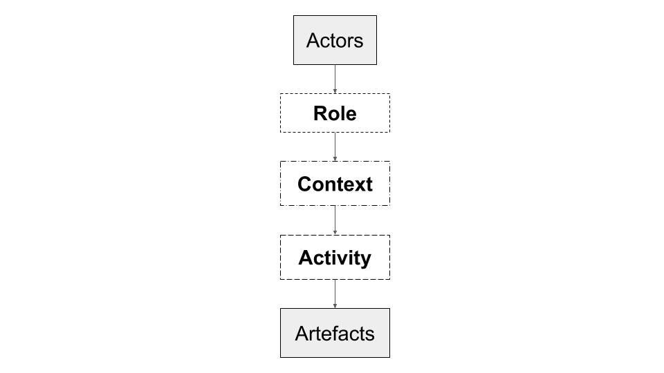
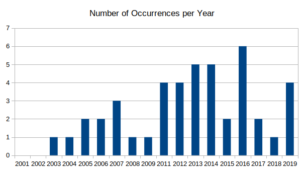
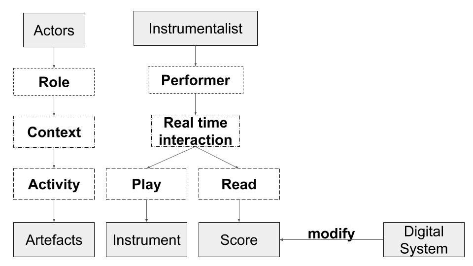
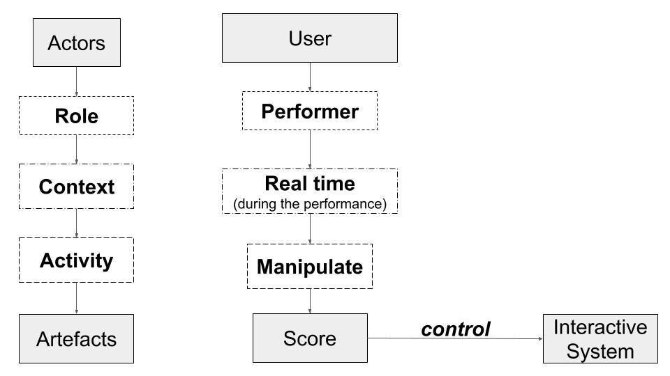
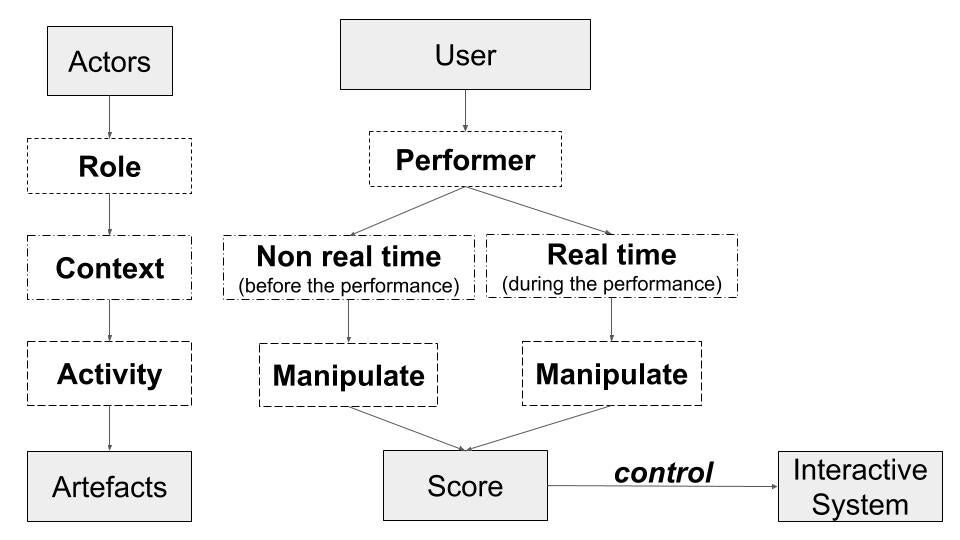
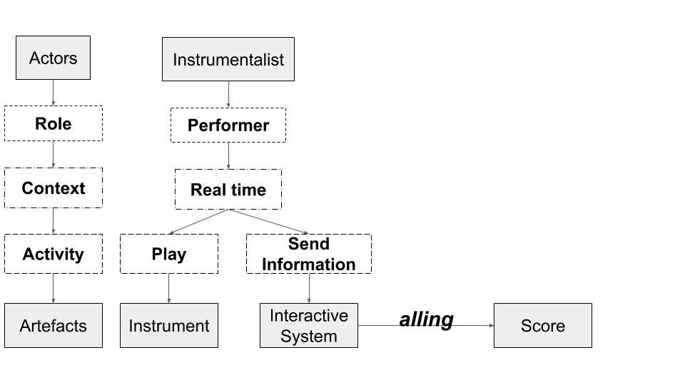
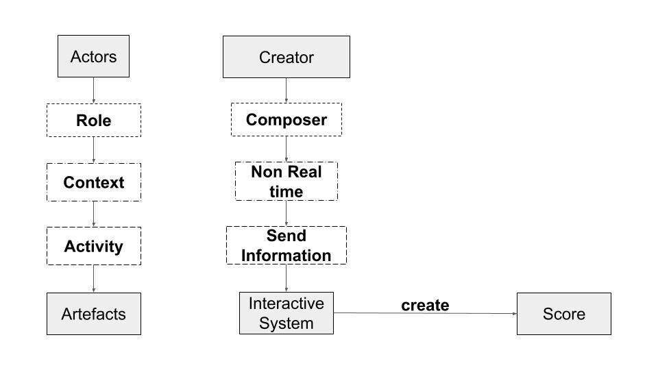
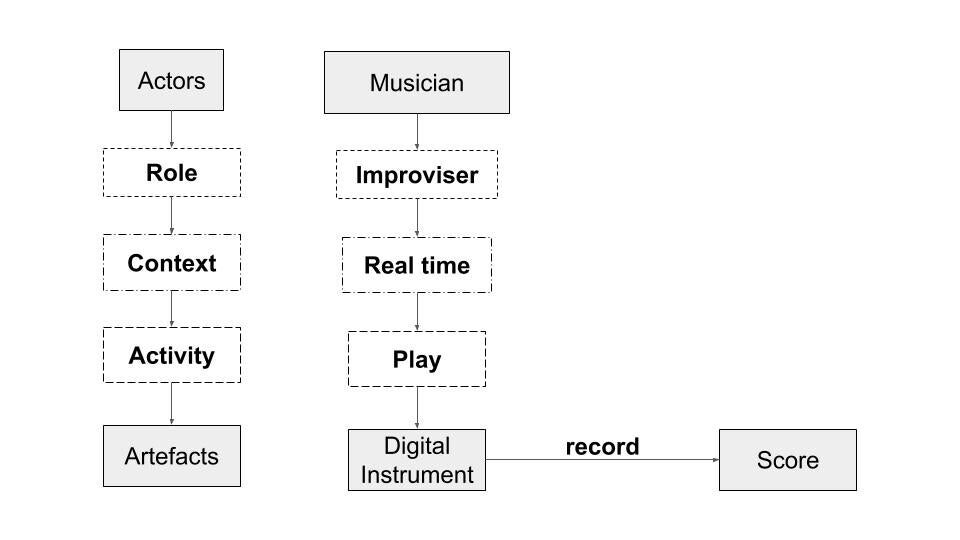

<!doctype html><html lang="en"><head><meta charset="utf-8"><meta name="viewport" content="width=device-width,initial-scale=1">
<title>NIME Scores: a Systematic Review of How Scores Have Shaped Performance Ecologies in NIME</title><link rel="stylesheet" href="../../../style.css"></head><body>
<header class="site"><a href="../../../index.html">NIME 2021–2022 archive</a> <span class="muted">experimental static edition of the PubPub proceedings</span></header>
<main><nav class="muted"><a href="../../../index.html">Archive</a> › <a href="../../index.html">2021</a> › <a href="../index.html">Papers</a></nav><article><h1 class="title">NIME Scores: a Systematic Review of How Scores Have Shaped Performance Ecologies in NIME</h1>
<div class="byline">Raul Masu<sup>1</sup>, Nuno N. Correia<sup>2</sup>, Teresa Romao<sup>3</sup><div class="aff"><sup>1</sup>DI, FCT, Universidade NOVA de Lisboa, ITI/LARSyS, and NOVA Lincs, ; <sup>2</sup>University of Greenwich and, ITI/LARSyS, ; <sup>3</sup>DI, FCT, Universidade NOVA de Lisboa, and NOVA Lincs</div></div>
<div class="meta"><b>Track</b><span>Papers · NIME 2021 · Shanghai (online)</span><b>BibTeX key</b><span><code>nime2021_10</code></span><b>DOI</b><span><a href="https://doi.org/10.21428/92fbeb44.3ffad95a">10.21428/92fbeb44.3ffad95a</a></span><b>Version of record</b><span><a href="https://nime.pubpub.org/pub/41cj1pyt">https://nime.pubpub.org/pub/41cj1pyt</a></span><b>PDF</b><span><a href="https://nime.pubpub.org/pub/41cj1pyt/download/pdf">PubPub PDF</a></span><b>Presentation video</b><span><a href="https://youtu.be/j7XmQvDdUPk">https://youtu.be/j7XmQvDdUPk</a> <span class="badge ok">link live</span> <span class="muted">3-02 NIME Scores: a Systematic Review of How Scores Have Shaped Performance E...</span></span><b>Other external links</b><span><a href="https://youtu.be/ADLo-QdSwBc">https://youtu.be/ADLo-QdSwBc</a> <span class="badge ok">link live</span> <span class="muted">What Makes a Good Musical Instrument? A Matter of Processes, Ecologies and Specificities</span></span><b>Licence</b><span>CC BY 4.0</span></div>
<div class="editor"><h1 id="abstract">Abstract</h1><p>This paper investigates how the concept of score has been used in the NIME community. To this end, we performed a systematic literature review of the NIME proceedings, analyzing papers in which scores play a central role. We analyzed the score not as an object per se but in relation to the users and the interactive system(s). In other words, we primarily looked at the role that scores play in the performance ecology.  For this reason, to analyze the papers, we relied on ARCAA, a recent framework created to investigate artifact ecologies in computer music performances. Using the framework, we created a scheme for each paper and clustered the papers according to similarities. Our analysis produced five main categories that we present and discuss in relation to literature about musical scores.</p><h2 id="author-keywords">Author Keywords</h2><p>Score, Performance Ecology, Literature Review, Taxonomy</p><h2 id="ccs-concepts">CCS Concepts</h2><p>•<strong>Applied computing</strong> <strong>→</strong>Arts and humanities <strong>→Sound and music computing;</strong></p><h1 id="introduction">Introduction</h1><p>Musical scores have impacted electronic musicians&#x27; reasoning, at the same time, electronic musicians appropriated the conception of scores, bending it to the new languages and technologies. As we will detail in this paper, such relation reverberated and further evolved in the NIME practice. </p><p>Scores can be investigated from many different perspectives; for instance, what type of score it is, what notation it adopts, or which music form it assumes. These perspectives could offer interesting reflections, and scholars have investigated scores from these angles. However, scores are also central in music performance ecologies, which are the complex net of interactions occurring in a performance <a href="#citation-Bod5tnz5aw-bottom" id="citation-Bod5tnz5aw-inline" data-node-type="citation" class="citation">[1]</a>. In such ecologies, scores act as elements that connect people, music, and instruments; usually, different people: those who write scores (composers) and those who read scores (performers). In this perspective, scores can be understood as an interface between different people and the music; and are pivotal in determining relations within performance ecologies. Within music technology, the idea of performance ecology has proved to be useful to look at the roles and interactions that occur around music technology <a href="#citation-Bod5tnz5aw-bottom" id="citation-Bod5tnz5aw-inline" data-node-type="citation" class="citation">[1]</a>.</p><p>Given the within NIME focus on interaction, we decided to investigate scores within NIME from this perspective. Therefore, this<em> </em>paper aims to understand what types of relationships exist among musicians, technology, pieces, and instruments in works presented at NIME in which score was central. We summarized this objective in the following research question: </p><p><em>What kind of performance ecologies occur when scores have a central role in NIME systems?</em></p><p>To this end, we present a systematic review of papers presented at NIME in which the notion of score was somehow central. We analyzed the ecologies implied by the systems presented in these NIME papers using ARCAA <a href="#citation-ixA0co9p24-bottom" id="citation-ixA0co9p24-inline" data-node-type="citation" class="citation">[2]</a>, a framework recently developed to support the understanding of ecologies in music performances. We then clustered these articles according to similarities. This analysis produced five categories that we suggest can be used as a taxonomy to classify score adoption in NIME. As a complementary contribution, this analysis also highlights the new different types and conceptions of score that correspond to such ecologies.</p><h1 id="background">Background </h1><h2 id="score---an-overview">Score - an overview</h2><p>Although the conception of score largely evolved in the last century, especially in NIME, scores are musical tools that emerged in Europe and whose adoption and evolution are intimately connected with a western approach to musical practice. Scores have played a pivotal role in the unfolding of the Western musical tradition. A remarkable exemplification of this fact is provided by the musicologist Taruskin who marked the beginning of his <em>History of Western Music</em> by analyzing the first forms of musical inscriptions <a href="#citation-cQoyC83YxD-bottom" id="citation-cQoyC83YxD-inline" data-node-type="citation" class="citation">[3]</a>. Scores also consolidated their central role in music practice during the Renaissance, thanks to the invention of music printing <a href="#citation-HKyOK+3JCX-bottom" id="citation-HKyOK+3JCX-inline" data-node-type="citation" class="citation">[4]</a>: by facilitating the circulation of music, scores consolidated the role of composers as authors.</p><p>Over the centuries, a standardized form of notation consolidated and allowed for a relatively straightforward interpretation of music; consequently, a piece could be re-performed at any time, and performers could rely on a relatively accurate description of the final musical form. From this angle, we support that a score can be intended both as a communication tool that acts as a <em>human-human interface </em>(composer-performer) and as an artistic object that encodes an artwork&#x27;s characteristics. The latter aspect is reinforced by how the word score is used in the classic music jargon. For instance, in an orchestral piece, the score is the book that comprises all the individual parts, which normally is read by the conductor, while instrumentalists read from their parts, not from the score.</p><p>As composers started to expand their music vocabulary in the last century, the notion of score evolved. In 1963, the composer Cardew wrote <a href="#citation-JpgNDptcgs-bottom" id="citation-JpgNDptcgs-inline" data-node-type="citation" class="citation">[5]</a>:</p><blockquote id="mvh4x2qpy2"><p>&quot;a composer who hears sound will try to find a notation for sounds. One who has ideas will find one that expresses his ideas, leaving their interpretation free&quot;.</p></blockquote><p>This trend is particularly evident in aleatoric music, where scores no longer encoded the pieces in their final form. Instead, composers created scores that defined sets of possibilities and asked performers to choose among them. Italian philosopher Umberto Eco proposed the term <em>open work</em> to define the indeterminacy in these works <a href="#citation-cBtYeC+71y-bottom" id="citation-cBtYeC+71y-inline" data-node-type="citation" class="citation">[6]</a>. In these pieces, the aesthetic identity defined by the scores does not correspond with the final form of the music; rather, it encodes the rules to create such a form. In many cases, this indeterminacy relied on graphical non-standardized elements <a href="#citation-Pn4i7K7ELN-bottom" id="citation-Pn4i7K7ELN-inline" data-node-type="citation" class="citation">[7]</a>.</p><h2 id="score-and-music-technology">Score and Music Technology</h2><p>Graphic notations and aleatoric avant-garde practices have substantially impacted the development of music technology and digital systems. For instance, graphical forms of notation have been applied to screen scores as a form of &quot;new media manuscript&quot;, as defined by Hope and Vickery <a href="#citation-XuY1Pp0MXl-bottom" id="citation-XuY1Pp0MXl-inline" data-node-type="citation" class="citation">[8]</a>, in which musical scores are displayed in real-time, often in a dynamic form, on digital screens (e.g. <a href="#citation-wppSKk7ms2-bottom" id="citation-wppSKk7ms2-inline" data-node-type="citation" class="citation">[9]</a>,<a href="#citation-epSvCaXvzJ-bottom" id="citation-epSvCaXvzJ-inline" data-node-type="citation" class="citation">[10]</a>,<a href="#citation-1YRu6zr1io-bottom" id="citation-1YRu6zr1io-inline" data-node-type="citation" class="citation">[11]</a>). Similarly, Magnusson argued that live coding is a form of music notation and connected it with the evolution of music scores, including the avant-garde graphic experimentations <a href="#citation-SUPjtk8EoE-bottom" id="citation-SUPjtk8EoE-inline" data-node-type="citation" class="citation">[12]</a>. Aleatoric scores have also been used to design VR installations <a href="#citation-wU1D2tLeZa-bottom" id="citation-wU1D2tLeZa-inline" data-node-type="citation" class="citation">[13]</a>. </p><p>Within the electronic and computer music domain, compositional processes and the creation of music technology have often overlapped. For instance, the composer Lucier, reflecting on some of the work with the collective of composers/makers/performers Sonic Art Union, formulated that &quot;the scores were inherent to the circuits&quot; <a href="#citation-6urstmnAca-bottom" id="citation-6urstmnAca-inline" data-node-type="citation" class="citation">[14]</a>. This approach was crucial in transforming the conception, role, and function that scores play in the music technology practice. In his book, Magnusson analyzes how instruments often embed theoretical music models, determining the type of music implied by the instrument itself <a href="#citation-Qw1wU7mPdO-bottom" id="citation-Qw1wU7mPdO-inline" data-node-type="citation" class="citation">[15]</a>.</p><p>Within NIME, the overlapping between composition and technology is discussed since the first editions of the conference:  in 2002, Schnell and Battier proposed the <em>composed instrument</em> <a href="#citation-QlPwcHIJrO-bottom" id="citation-QlPwcHIJrO-inline" data-node-type="citation" class="citation">[16]</a>: an interactive musical artifact that embodies the notion of the score. Discussing them, Magnusson argued that &quot;the distinction often blurs between instrument and composition on the one hand, and performance and composition on the other&quot; <a href="#citation-PR/ZrNpGsX-bottom" id="citation-PR/ZrNpGsX-inline" data-node-type="citation" class="citation">[17]</a>. This idea can also be traced beyond Cook&#x27;s guideline &quot;make a piece, not an instrument&quot; <a href="#citation-DYnau/vdNg-bottom" id="citation-DYnau/vdNg-inline" data-node-type="citation" class="citation">[18]</a>, as it implies that a new Digital Musical Instrument (DMI) should be designed aiming at a specific piece.</p><p>Discussing the overlapping of instruments and scores, Maestri reflected on how this tendency affects the ecology of the various actors involved in music performances <a href="#citation-fqtSJz8gxR-bottom" id="citation-fqtSJz8gxR-inline" data-node-type="citation" class="citation">[19]</a>:</p><blockquote id="pq80z6kr3j"><p>&quot;the very communicative chain and roles between instrument-makers, composers, performers, and computer-music designers are to be genuinely rethought as cycles of synergy rather than linear models&quot; .</p></blockquote><h2 id="ecology-of-music-performances">Ecology of Music Performances</h2><p>In the computer music discourse, the idea of a performance ecology indicates a complex set of agents, including makers, performers, composers, instruments, and the environment. For instance, Gurevich and Trevino, discussing the ecology of music creation, focused on the &quot;relationships between composers, performers, and listeners as a part of a system&quot;, also considering history, genre, and context <a href="#citation-Ae+E3sYmWx-bottom" id="citation-Ae+E3sYmWx-inline" data-node-type="citation" class="citation">[20]</a>. Similarly, Waters speaks about performance ecosystems to study the interactions between performers, instruments, and environment <a href="#citation-Bod5tnz5aw-bottom" id="citation-Bod5tnz5aw-inline" data-node-type="citation" class="citation">[1]</a>. This perspective was recently further developed by Masu et al., who, by borrowing the concept of artifact ecology from HCI scholars (developed ARCAA, a framework to analyze digital performance ecologies initially proposed in <a href="#citation-ixA0co9p24-bottom" id="citation-ixA0co9p24-inline" data-node-type="citation" class="citation">[2]</a>, and further discussed in <a href="#citation-vQlElASAZI-bottom" id="citation-vQlElASAZI-inline" data-node-type="citation" class="citation">[21]</a>; see <a href="#citation-vD3BcKR3O8-bottom" id="citation-vD3BcKR3O8-inline" data-node-type="citation" class="citation">[22]</a> for a reference on artifact ecologies).</p><p>ARCAA <a href="#citation-ixA0co9p24-bottom" id="citation-ixA0co9p24-inline" data-node-type="citation" class="citation">[2]</a> is based on the structure of MINUET <a href="#citation-838CGLIuxm-bottom" id="citation-838CGLIuxm-inline" data-node-type="citation" class="citation">[23]</a>, a previous design framework presented at NIME in 2014. The purpose of ARCAA is to help designers, musicians, or composers to understand the relations between the various human actors and artifacts that occur in a performative situation. The framework (Figure 1) aims to provide an overview of a given performance ecology by connecting all the actors (top in the scheme in the image) to all the artifacts (bottom in the scheme in the image) using three levels: Role, Context, Activities. Each level proposes a different question related to the actors: 1) <em>&quot;Who is involved, and in which </em><strong><em>role</em></strong><em>?&quot;</em>; 2) <em>&quot;In which </em><strong><em>context</em></strong><em> is each actor involved?&quot;</em>; 3)<em> &quot;What kind of </em><strong><em>activities</em></strong><em> are the actors performing?&quot;</em>  <a href="#citation-ixA0co9p24-bottom" id="citation-ixA0co9p24-inline" data-node-type="citation" class="citation">[2]</a>. Given our research objective, we argue that ARCAA is a valid tool for analyzing what types of ecologies are determined by the use of scores in systems presented at NIME.</p><figure id="0o9xbjayk5" class="image"><a href="https://assets.pubpub.org/ngkfmqes/61609927522415.jpg"></a><figcaption id="0o9xbjayk5-figure-caption"><div><div><p>Figure 1. ARCAA as presented by Masu et al. [2].</p></div></div></figcaption></figure><p><br/></p><h2 id="self-reflections-within-the-nime-community">Self-reflections within the NIME community</h2><p>A long tradition of self-reflective research has characterized the NIME community. For instance, researchers reflected upon the value of community in interactive music research <a href="#citation-lwnE3ExgO+-bottom" id="citation-lwnE3ExgO+-inline" data-node-type="citation" class="citation">[24]</a>, creative and technical discourses surrounding DMIs design <a href="#citation-6P39nsWxI3-bottom" id="citation-6P39nsWxI3-inline" data-node-type="citation" class="citation">[25]</a>, general research approaches <a href="#citation-iZ0uVTP0mp-bottom" id="citation-iZ0uVTP0mp-inline" data-node-type="citation" class="citation">[26]</a>, the use of thematic analysis <a href="#citation-HD9XN1eJNq-bottom" id="citation-HD9XN1eJNq-inline" data-node-type="citation" class="citation">[27]</a>, and the identity of NIMEs in relation to the music performed <a href="#citation-FWuOG8/6cB-bottom" id="citation-FWuOG8/6cB-inline" data-node-type="citation" class="citation">[28]</a>.</p><p>In this context, systematic analysis of NIME proceedings has been used, for instance, to study the meaning of the word <em>gestures</em> for NIME authors <a href="#citation-6ZXzrk+m4Y-bottom" id="citation-6ZXzrk+m4Y-inline" data-node-type="citation" class="citation">[29]</a>, the evaluation strategies used <a href="#citation-wa4vhv8abH-bottom" id="citation-wa4vhv8abH-inline" data-node-type="citation" class="citation">[30]</a>, looking for trends in the development of NIMEs <a href="#citation-lEMI2vggHP-bottom" id="citation-lEMI2vggHP-inline" data-node-type="citation" class="citation">[31]</a>, and environmental practices <a href="#citation-E/MBW05f0H-bottom" id="citation-E/MBW05f0H-inline" data-node-type="citation" class="citation">[32]</a>. Additionally, Sullivan and Wanderley recently analyzed DMI reliability across the proceedings of NIME/ICMC/SMC <a href="#citation-T2qupUsfLR-bottom" id="citation-T2qupUsfLR-inline" data-node-type="citation" class="citation">[33]</a>. </p><h1 id="systematic-literature-review">Systematic Literature Review</h1><p>To perform the systematic literature review, we conducted a search in  <a href="https://www.zenodo.org/communities/nime_conference/?page=1&amp;size=20" target="_blank">Zenodo</a>, the official NIME proceedings repository, using <em>score</em> as a keyword. According to the Zenodo guidelines, results match records of the word in any field of the repository. We performed this research on the week of the 26th of October 2020. The research produced 51 papers. Eight papers were excluded from the analysis, of which five were excluded because they simply mention the word score, but scores are not central in the interaction:  <a href="#citation-ds2Cehqes7-bottom" id="citation-ds2Cehqes7-inline" data-node-type="citation" class="citation">[34]</a>,<a href="#citation-51AyW0Z4i+-bottom" id="citation-51AyW0Z4i+-inline" data-node-type="citation" class="citation">[35]</a>,<a href="#citation-M23mfK+mAS-bottom" id="citation-M23mfK+mAS-inline" data-node-type="citation" class="citation">[36]</a><strong>,</strong><a href="#citation-qv64hmWbN5-bottom" id="citation-qv64hmWbN5-inline" data-node-type="citation" class="citation">[37]</a><strong>,</strong><a href="#citation-PxlF1OpyGd-bottom" id="citation-PxlF1OpyGd-inline" data-node-type="citation" class="citation">[38]</a><strong>. </strong>One paper used the word score to indicate point counting in a game <a href="#citation-2xoLRCOgFq-bottom" id="citation-2xoLRCOgFq-inline" data-node-type="citation" class="citation">[39]</a>. Two other papers have been excluded because there is no relation between the users involved in the interaction and the score <a href="#citation-RAQpTZwupC-bottom" id="citation-RAQpTZwupC-inline" data-node-type="citation" class="citation">[40]</a>,<a href="#citation-pTStOFH9Ob-bottom" id="citation-pTStOFH9Ob-inline" data-node-type="citation" class="citation">[41]</a>. Kim et al. developed a system in which a score is used for musical elements that are played by different devices <a href="#citation-RAQpTZwupC-bottom" id="citation-RAQpTZwupC-inline" data-node-type="citation" class="citation">[40]</a>. There is no user-score relationship in this system, as the various devices interact among themselves. Xia and Dannenberg <a href="#citation-pTStOFH9Ob-bottom" id="citation-pTStOFH9Ob-inline" data-node-type="citation" class="citation">[41]</a> used piano scores to train a system for automatic accompaniment, but there is no real relationship between users and scores in the final interaction. Figure 2 presents the occurrences of the papers for every year after the exclusion.</p><figure id="4s1jyrqnf9" class="image"><a href="https://assets.pubpub.org/7dhccmpf/51609853459529.png"></a><figcaption id="4s1jyrqnf9-figure-caption"><div><div><p>Figure 2: Number of occurrences per year after the exclusion.</p></div></div></figcaption></figure><p>We analyzed the identified 43 papers following a three-step procedure. In the first step, we created an ARCAA representation for each paper. In the second step, we coded the type of actions that users perform regarding the score and the main interactive system, also considering the context as emerged in ARCAA. We acknowledge that the term <em>user</em> can be limiting in the context of music performance, as recently pointed out by Rodger et al. <a href="#citation-uJ04ZnfEpn-bottom" id="citation-uJ04ZnfEpn-inline" data-node-type="citation" class="citation">[42]</a>, in previous research we argued in favour of the term <em>actor</em> <a href="#citation-ixA0co9p24-bottom" id="citation-ixA0co9p24-inline" data-node-type="citation" class="citation">[2]</a>; in the context of this paper, we used <em>user</em> to identify the person who primarily interacts with the score in the system. In the third step, we recursively harmonized the codes according to similarities in the corresponding ARCAA representation and clustering them, following a procedure inspired by thematic analysis <a href="#citation-QjQax80MXy-bottom" id="citation-QjQax80MXy-inline" data-node-type="citation" class="citation">[43]</a>. </p><h1 id="results">Results</h1><p>Our analysis produced five main categories, two of them with sub-categories. We could not cluster three papers. An overview of the results is provided in the following table.</p><table id="nc36a7ybhk0"><tbody><tr><td><p><strong>Category</strong></p></td><td><p><strong>Sub-categories</strong></p></td><td><p><strong>Papers</strong></p></td></tr><tr><td rowspan="3"><p>Scores as instructions (15 papers)</p></td><td><p>Scores suggesting how to play a particular new DMI (3 papers)</p></td><td><p><a href="#citation-zgoWfDV+Wi-bottom" id="citation-zgoWfDV+Wi-inline" data-node-type="citation" class="citation">[44]</a><a href="#citation-hPLPQuzlLg-bottom" id="citation-hPLPQuzlLg-inline" data-node-type="citation" class="citation">[45]</a><a href="#citation-UkGU+Kaqg6-bottom" id="citation-UkGU+Kaqg6-inline" data-node-type="citation" class="citation">[46]</a></p></td></tr><tr><td><p>Scores suggesting how to play an acoustic instrument for pedagogical purposes (3 papers)</p></td><td><p><a href="#citation-UAIuOL/ABw-bottom" id="citation-UAIuOL/ABw-inline" data-node-type="citation" class="citation">[47]</a><a href="#citation-BvcRVtl5Iq-bottom" id="citation-BvcRVtl5Iq-inline" data-node-type="citation" class="citation">[48]</a><a href="#citation-T1sm1lrXlM-bottom" id="citation-T1sm1lrXlM-inline" data-node-type="citation" class="citation">[49]</a></p></td></tr><tr><td><p>Scores suggesting how to play an instrument in non-pedagogical contexts (9 papers)</p></td><td><p><a href="#citation-LCkYVk0Lm9-bottom" id="citation-LCkYVk0Lm9-inline" data-node-type="citation" class="citation">[50]</a><a href="#citation-KTT3p895US-bottom" id="citation-KTT3p895US-inline" data-node-type="citation" class="citation">[51]</a><a href="#citation-FCVjQxnHbn-bottom" id="citation-FCVjQxnHbn-inline" data-node-type="citation" class="citation">[52]</a><a href="#citation-KD/s0ZkU/e-bottom" id="citation-KD/s0ZkU/e-inline" data-node-type="citation" class="citation">[53]</a><a href="#citation-7KkgvEsPL5-bottom" id="citation-7KkgvEsPL5-inline" data-node-type="citation" class="citation">[54]</a><a href="#citation-0KkVjFgewV-bottom" id="citation-0KkVjFgewV-inline" data-node-type="citation" class="citation">[55]</a><a href="#citation-1zSiImRt5r-bottom" id="citation-1zSiImRt5r-inline" data-node-type="citation" class="citation">[56]</a><a href="#citation-IyS9RZpmFO-bottom" id="citation-IyS9RZpmFO-inline" data-node-type="citation" class="citation">[57]</a><a href="#citation-Vv8rTd2if4-bottom" id="citation-Vv8rTd2if4-inline" data-node-type="citation" class="citation">[58]</a></p></td></tr><tr><td rowspan="2"><p>Scores as an interface to play a DMI (10 papers)</p></td><td><p>Interaction with the score only in real-time (6 papers)</p></td><td><p><a href="#citation-VlFTFSw00v-bottom" id="citation-VlFTFSw00v-inline" data-node-type="citation" class="citation">[59]</a><a href="#citation-ID6X43NmDX-bottom" id="citation-ID6X43NmDX-inline" data-node-type="citation" class="citation">[60]</a><a href="#citation-s5OJJi1xlf-bottom" id="citation-s5OJJi1xlf-inline" data-node-type="citation" class="citation">[61]</a><a href="#citation-yRc/4p9Jc9-bottom" id="citation-yRc/4p9Jc9-inline" data-node-type="citation" class="citation">[62]</a><a href="#citation-lHwyLQ45j3-bottom" id="citation-lHwyLQ45j3-inline" data-node-type="citation" class="citation">[63]</a><a href="#citation-XQyDNnBXZE-bottom" id="citation-XQyDNnBXZE-inline" data-node-type="citation" class="citation">[64]</a></p></td></tr><tr><td><p>Interaction with the score in a two-step process (4 papers)</p></td><td><p><a href="#citation-j+2suFR9a0-bottom" id="citation-j+2suFR9a0-inline" data-node-type="citation" class="citation">[65]</a><a href="#citation-fCJy+yEGGA-bottom" id="citation-fCJy+yEGGA-inline" data-node-type="citation" class="citation">[66]</a><a href="#citation-m/q0lbFWYH-bottom" id="citation-m/q0lbFWYH-inline" data-node-type="citation" class="citation">[67]</a><a href="#citation-lmFQkj2Yae-bottom" id="citation-lmFQkj2Yae-inline" data-node-type="citation" class="citation">[68]</a></p></td></tr><tr><td><p>Score as synchronization (6 papers)</p></td><td><p><br/></p></td><td><p><a href="#citation-QhsqUll0+G-bottom" id="citation-QhsqUll0+G-inline" data-node-type="citation" class="citation">[69]</a><a href="#citation-ABwWd5CWq+-bottom" id="citation-ABwWd5CWq+-inline" data-node-type="citation" class="citation">[70]</a><a href="#citation-0ul+7ZrX/e-bottom" id="citation-0ul+7ZrX/e-inline" data-node-type="citation" class="citation">[71]</a><a href="#citation-HgbuCEaqQY-bottom" id="citation-HgbuCEaqQY-inline" data-node-type="citation" class="citation">[72]</a><a href="#citation-yz51MKK7cC-bottom" id="citation-yz51MKK7cC-inline" data-node-type="citation" class="citation">[73]</a><a href="#citation-yoaQu8WuYG-bottom" id="citation-yoaQu8WuYG-inline" data-node-type="citation" class="citation">[74]</a></p></td></tr><tr><td><p>Scores creation (6 papers)</p></td><td><p><br/></p></td><td><p><a href="#citation-dQdUnPNns4-bottom" id="citation-dQdUnPNns4-inline" data-node-type="citation" class="citation">[75]</a><a href="#citation-22jbluYdnJ-bottom" id="citation-22jbluYdnJ-inline" data-node-type="citation" class="citation">[76]</a><a href="#citation-yTVI+kS8xf-bottom" id="citation-yTVI+kS8xf-inline" data-node-type="citation" class="citation">[77]</a><a href="#citation-52PEqiCrqW-bottom" id="citation-52PEqiCrqW-inline" data-node-type="citation" class="citation">[78]</a><a href="#citation-F2IQ/3x5fv-bottom" id="citation-F2IQ/3x5fv-inline" data-node-type="citation" class="citation">[79]</a><a href="#citation-W0EM4mWDlS-bottom" id="citation-W0EM4mWDlS-inline" data-node-type="citation" class="citation">[80]</a></p></td></tr><tr><td><p>Score as a recording (3 papers)</p></td><td><p><br/></p></td><td><p><a href="#citation-mQh7wnmLuG-bottom" id="citation-mQh7wnmLuG-inline" data-node-type="citation" class="citation">[81]</a><a href="#citation-5Uh2dBmdke-bottom" id="citation-5Uh2dBmdke-inline" data-node-type="citation" class="citation">[82]</a><a href="#citation-MaxJVc9icH-bottom" id="citation-MaxJVc9icH-inline" data-node-type="citation" class="citation">[83]</a></p></td></tr><tr><td><p>Non categorized papers (3 papers)</p></td><td><p><br/></p></td><td><p><a href="#citation-dcdD2SXYOg-bottom" id="citation-dcdD2SXYOg-inline" data-node-type="citation" class="citation">[84]</a><a href="#citation-ibZZUScYAP-bottom" id="citation-ibZZUScYAP-inline" data-node-type="citation" class="citation">[85]</a><a href="#citation-4e8X8zLNod-bottom" id="citation-4e8X8zLNod-inline" data-node-type="citation" class="citation">[86]</a></p></td></tr></tbody></table><p> In the following sections, we detail categories and sub-categories, briefly describing the interactions that emerge in the various papers. We present the various papers in paragraphs according to similarities within the categories and sub-categories.</p><h2 id="scores-as-instructions">Scores as Instructions</h2><p>The first category comprises 15 papers in which the score gives instructions in real-time to a performer who is playing an instrument (in most cases, a traditional instrument), like in screen score systems <a href="#citation-XuY1Pp0MXl-bottom" id="citation-XuY1Pp0MXl-inline" data-node-type="citation" class="citation">[8]</a>. In these papers, scores are one of the main outputs of the interactive systems, performers are implicitly conceived as the main users, and the scores provide instruction on how to play their instrument. In this category, the interactions primarily occur in a real-time context either for concert or rehearsal. Figure 3 represents the core element of this ecology; some papers have also other actors, but in all cases, this configuration is at the core of the interaction. We realize that these scores have a composer. However, these papers focus on the type of interaction that performers have with the score, not the relation with the composer. </p><p>The sub-categories are defined according to similarities in the type of instrument performed (DMI or traditional instrument) or in the specific context (a few papers developed system for pedagogical contexts).</p><figure id="nw0z9ibe568" class="image"><a href="https://assets.pubpub.org/bayj2e9g/71610824589155.jpg"></a><figcaption id="nw0z9ibe568-figure-caption"><div><div><p>Figure 3. The core interactive ecology of the first category.</p></div></div></figcaption></figure><p><strong>Scores Suggesting how to Play a Particular new DMI</strong></p><p>In three papers, the score is used to give indications or support performances with a novel musical interface. In two cases, the user reads the score while performing with a DMI. In one case, the DMI is controlled by a Brain-Computer Interface (BCI) <a href="#citation-zgoWfDV+Wi-bottom" id="citation-zgoWfDV+Wi-inline" data-node-type="citation" class="citation">[44]</a> and in the second case it is a keyboard that controls a vocal synthesizer <a href="#citation-hPLPQuzlLg-bottom" id="citation-hPLPQuzlLg-inline" data-node-type="citation" class="citation">[45]</a>. In both these cases, the ecology is relatively simple; there is one user who acts as a performer in real-time and plays a new DMI while reading a score.</p><p>The last paper in this sub-category presents MICON <a href="#citation-UkGU+Kaqg6-bottom" id="citation-UkGU+Kaqg6-inline" data-node-type="citation" class="citation">[46]</a>, an installation where visitors can control an imaginary orchestra while reading a score displayed on a screen. This example is slightly different compared to the other two as the context is not performative, and the notion of the performer is a bit stretched in this case. The user is a visitor rather than an instrumentalist who controls an interface rather than plays an instrument. However, the connections in the ecology create a structure comparable with the other two papers presented in this subsection: the relation that the user has with the digital technology that produces the sound (play/control) and with the score (read in real-time).</p><p><strong>Scores Suggesting how to Play an Acoustic Instrument for Pedagogical Purposes</strong></p><p>Three papers presented systems designed to support students or novices in learning an instrument. Two papers <a href="#citation-UAIuOL/ABw-bottom" id="citation-UAIuOL/ABw-inline" data-node-type="citation" class="citation">[47]</a>,<a href="#citation-BvcRVtl5Iq-bottom" id="citation-BvcRVtl5Iq-inline" data-node-type="citation" class="citation">[48]</a> present a system that listens to the performer/student and shows errors or alignment issues. These two papers present the very same ecology: one actor in his rehearsal/study context plays his instrument while reading a score on a screen, which also provides information about eventual errors.</p><p>The third paper in this category has a slightly more complex ecology, as it also includes a maestro who plays the role of the conductor <a href="#citation-T1sm1lrXlM-bottom" id="citation-T1sm1lrXlM-inline" data-node-type="citation" class="citation">[49]</a>. In this paper, the system takes the time provided by the conductor and displays it on the score to facilitate beat counting to the pupils. We decided to incorporate this paper in the same category as it belongs to the same context, and the primary user (the student) has a similar relationship with the score and the instrument.</p><p><strong>Scores Suggesting how to Play an Instrument in Non-Pedagogical Contexts</strong></p><p>This last sub-category comprises nine papers in which an interactive system displays a score in real-time, and a performer plays an acoustic instrument. In some cases, the score is directly manipulated by the users. For instance, the performer controls the score (with a pedal)<a href="#citation-LCkYVk0Lm9-bottom" id="citation-LCkYVk0Lm9-inline" data-node-type="citation" class="citation">[50]</a>, or influences it by her movement <a href="#citation-KTT3p895US-bottom" id="citation-KTT3p895US-inline" data-node-type="citation" class="citation">[51]</a>. In these two cases, the performer, while performing, reads a score and plays her instrument, but at the same time, her action affects the score. So the instrumentalist acts both in the input and in the output phases of the interactive systems.</p><p>In the majority of cases, however, the score is not controlled or manipulated by the instrumentalist. Therefore, from the instrumentalist perspective, the score is only the output of the interactive system. These cases include papers where many instrumentalists read the score on screens in network performances <a href="#citation-FCVjQxnHbn-bottom" id="citation-FCVjQxnHbn-inline" data-node-type="citation" class="citation">[52]</a>,<a href="#citation-KD/s0ZkU/e-bottom" id="citation-KD/s0ZkU/e-inline" data-node-type="citation" class="citation">[53]</a> and a case in which a pianist performs a screen score that is influenced by an audience member with a BCI <a href="#citation-7KkgvEsPL5-bottom" id="citation-7KkgvEsPL5-inline" data-node-type="citation" class="citation">[54]</a>. In another case, the score is delivered to the performer in the form of temperature feedback <a href="#citation-0KkVjFgewV-bottom" id="citation-0KkVjFgewV-inline" data-node-type="citation" class="citation">[55]</a>, different keys of a piano keyboard change temperature according to the score&#x27;s notes. The notion of <em>reading </em>is not literal with this paper, but still, the user has to understand and interpret the information that the score gives him.</p><p>In the last three papers belonging to this category, composers are explicitly mentioned and briefly discussed. In one case, the composer adapts the score for a digital visualization <a href="#citation-1zSiImRt5r-bottom" id="citation-1zSiImRt5r-inline" data-node-type="citation" class="citation">[56]</a>; in another case, the composer is the main author of the piece <a href="#citation-IyS9RZpmFO-bottom" id="citation-IyS9RZpmFO-inline" data-node-type="citation" class="citation">[57]</a>. However, both papers mainly focus on the experience of the performer, who relates to the score and the instrument in the same way as the other papers in this category. The last paper belonging to this category is a system in which the composer manipulates the score in real-time, and a pianist reads it and performs it <a href="#citation-Vv8rTd2if4-bottom" id="citation-Vv8rTd2if4-inline" data-node-type="citation" class="citation">[58]</a>. We decided to cluster this paper here because the situation is identical to the one described above from the pianist&#x27;s perspective. </p><p>In some cases, the overall ecology varies a bit. However, the core of all this category’ ecologies is the same: the context is performative, and the performer plays her instrument while following the instruction on a digitally modified score.</p><h2 id="scores-as-an-interface-to-play-a-dmi">Scores as an Interface to Play a DMI</h2><p>The second category comprises ten papers presenting systems in which the score is used as an interface to control a DMI: the score is the input of the interactive systems. In this category, there are two main sub-categories: 1) systems in which all the interactions with the score occur in real-time, and 2) systems in which there is a two-step process; before the performance, users define some element of the score, and during the performance users explore them. The core relationship of all these papers - the users manipulate a score to play an interface - is the same,  and for this reason, we categorized all of them together. However, the two sub-categories present slightly different core ecologies, and for this reason, we decided to present the ARCAA representation for each sub-category in the following dedicated two subsections.</p><p><strong>Interaction with the Score only in Real-Time </strong></p><p>In this sub-category (six papers), the user interacts with the score only during the performance (Figure 4). Examples include systems in which tangible elements are new forms of scores, such as physical objects representing notation that can be placed on a Reactable <a href="#citation-VlFTFSw00v-bottom" id="citation-VlFTFSw00v-inline" data-node-type="citation" class="citation">[59]</a>, or tangible plates with graphic elements engraved that can be explored through touch and represent the score as an inherent layer of the instrument <a href="#citation-ID6X43NmDX-bottom" id="citation-ID6X43NmDX-inline" data-node-type="citation" class="citation">[60]</a>. Graphic elements are also used in live coding contexts as a representation of the music; in this context, the performer modifies the score by using code <a href="#citation-s5OJJi1xlf-bottom" id="citation-s5OJJi1xlf-inline" data-node-type="citation" class="citation">[61]</a>. The DMI Notesatz has a mixed approach between tangible and graphical exploration of scores: a tangible interface is used to explore a graphic score <a href="#citation-yRc/4p9Jc9-bottom" id="citation-yRc/4p9Jc9-inline" data-node-type="citation" class="citation">[62]</a>. In some cases, the manipulation of the score is collaborative, and different audience members can manipulate it via web networks <a href="#citation-lHwyLQ45j3-bottom" id="citation-lHwyLQ45j3-inline" data-node-type="citation" class="citation">[63]</a>, <a href="#citation-XQyDNnBXZE-bottom" id="citation-XQyDNnBXZE-inline" data-node-type="citation" class="citation">[64]</a>.</p><figure id="nn90ztjdml4" class="image"><a href="https://assets.pubpub.org/kgiwcsoj/31610824026485.jpg"></a><figcaption id="nn90ztjdml4-figure-caption"><div><div><p>Figure 4. The core interactive ecology of the first sub-category of the second category.</p></div></div></figcaption></figure><p><strong>Interaction with the Score in a Two-Step Process</strong></p><p>In this sub-category (four papers), the user defines some score elements before the performance and interacts with them during the performance (Figure 5). Some systems use scores as visual elements; for instance, in LUSH<strong>,</strong> a preloaded score is transformed into a visual space that is explored during the performance <a href="#citation-j+2suFR9a0-bottom" id="citation-j+2suFR9a0-inline" data-node-type="citation" class="citation">[65]</a>. In another example, users can define their rules before the performance and use such rules to draw a score on a whiteboard and scan it to affect the musical output <a href="#citation-fCJy+yEGGA-bottom" id="citation-fCJy+yEGGA-inline" data-node-type="citation" class="citation">[66]</a>. Similarly, CABOTO <a href="#citation-m/q0lbFWYH-bottom" id="citation-m/q0lbFWYH-inline" data-node-type="citation" class="citation">[67]</a> takes as input a score created before the performance that can be explored during the performance. In the last example <a href="#citation-lmFQkj2Yae-bottom" id="citation-lmFQkj2Yae-inline" data-node-type="citation" class="citation">[68]</a>, before the performance, the user defines the parameters of the score, and in real-time, she can explore them with a gestural controller.</p><figure id="n1t9n0qngco" class="image"><a href="https://assets.pubpub.org/1v7nxbwf/51610824088727.jpg"></a><figcaption id="n1t9n0qngco-figure-caption"><div><div><p>Figure 5. The core interactive ecology of the second sub-category of the second category.</p></div></div></figcaption></figure><p>Overall in this category, the user in a real-time performative interaction creates or manipulates a score as a way to perform with the DMI. The score is the input and the DMI produces the sound. In some of these cases, the interaction with the score always occurs in real-time; in other cases, the user can set up some elements before the performance and then interact with them.</p><h2 id="score-as-synchronization">Score as Synchronization</h2><p>In the third category, five papers describe systems in which a score is used for synchronizing or relating the performer’s actions with other elements <a href="#citation-QhsqUll0+G-bottom" id="citation-QhsqUll0+G-inline" data-node-type="citation" class="citation">[69]</a>, <a href="#citation-ABwWd5CWq+-bottom" id="citation-ABwWd5CWq+-inline" data-node-type="citation" class="citation">[70]</a>, <a href="#citation-0ul+7ZrX/e-bottom" id="citation-0ul+7ZrX/e-inline" data-node-type="citation" class="citation">[71]</a>, <a href="#citation-HgbuCEaqQY-bottom" id="citation-HgbuCEaqQY-inline" data-node-type="citation" class="citation">[72]</a>, <a href="#citation-yz51MKK7cC-bottom" id="citation-yz51MKK7cC-inline" data-node-type="citation" class="citation">[73]</a>. In these papers, the system listens to the musician(s) for synchronization purposes. The score-following technique belongs to this category. Orio et al. <a href="#citation-yz51MKK7cC-bottom" id="citation-yz51MKK7cC-inline" data-node-type="citation" class="citation">[73]</a> presented a meta-review of score following rather than a specific system; however, the relation between interactive technology, score, and performer is aligned with the others papers.</p><p>Liang and colleagues presented a framework to cope with those situations where “improvisation prevents traditional score following, but where synchronization is achieved at the level of beats, measures, and cues” and the score becomes dynamically adapted to the performer <a href="#citation-yoaQu8WuYG-bottom" id="citation-yoaQu8WuYG-inline" data-node-type="citation" class="citation">[74]</a>.</p><p>Overall, in this category, a performer plays an instrument in a real-time interaction and gives information to the interactive system that checks what the performer is playing against a score, synchronizing it or creating dialogues with other elements (Figure 6).</p><figure id="n9j8lg63zqy" class="image"><a href="https://assets.pubpub.org/gi6po5f5/11610824261668.jpg"></a><figcaption id="n9j8lg63zqy-figure-caption"><div><div><p>Figure 6. The core interactive ecology of the third category.</p></div></div></figcaption></figure><h2 id="scores-creation">Scores Creation </h2><p>In the fourth category,  six papers present systems designed to support the creation of scores. In all these papers, the actors play the role of the creator/composer, the primary interaction occurs off-line, not on the stage, and the scores created with the system are usually supposed to be performed only in a second moment, which is outside of the focus of the paper. In some cases, there is one composer; in other cases, there are more than one, however, the core ecology is the same (Figure 7).</p><p>Two papers present systems to create scores collaboratively via the web. In the first case, the audience creates a new score corresponding to a new version of the piece for each concert <a href="#citation-dQdUnPNns4-bottom" id="citation-dQdUnPNns4-inline" data-node-type="citation" class="citation">[75]</a>. The second case describes an online tool for collaborative composition <a href="#citation-22jbluYdnJ-bottom" id="citation-22jbluYdnJ-inline" data-node-type="citation" class="citation">[76]</a>.</p><p>Other systems are meant for individual usage. An example is note~, a tool created to help composers to use drawing as part of the score creation <a href="#citation-yTVI+kS8xf-bottom" id="citation-yTVI+kS8xf-inline" data-node-type="citation" class="citation">[77]</a>. note~ has also been used in a studio context to control virtual instruments <a href="#citation-52PEqiCrqW-bottom" id="citation-52PEqiCrqW-inline" data-node-type="citation" class="citation">[78]</a>. Other examples span from helping composers to use drawing as part of their compositional process <a href="#citation-F2IQ/3x5fv-bottom" id="citation-F2IQ/3x5fv-inline" data-node-type="citation" class="citation">[79]</a> to offering gestural control of a scripting language  <a href="#citation-W0EM4mWDlS-bottom" id="citation-W0EM4mWDlS-inline" data-node-type="citation" class="citation">[80]</a>. </p><figure id="n8pe6bv4ibx" class="image"><a href="https://assets.pubpub.org/illlzxux/21610824516258.jpg"></a><figcaption id="n8pe6bv4ibx-figure-caption"><div><div><p>Figure 7. The core interactive ecology of the fourth category.</p></div></div></figcaption></figure><h2 id="scores-as-a-recording">Scores as a Recording</h2><p>The fifth category (three papers) presents systems in which the main user is a musician who improvises and interacts with a digital instrument. Simultaneously, the system records a score without affecting the interaction nor the performance (Figure 8). For instance, Beson and colleagues created a sound spatialization system and a shaping interface that allows users to record scores of what they perform <a href="#citation-mQh7wnmLuG-bottom" id="citation-mQh7wnmLuG-inline" data-node-type="citation" class="citation">[81]</a>; Liang and colleagues developed a system that analyzes piano pedaling and records a score of it <a href="#citation-5Uh2dBmdke-bottom" id="citation-5Uh2dBmdke-inline" data-node-type="citation" class="citation">[82]</a>; finally, MuDI allows for real-time creation of scores for films <a href="#citation-MaxJVc9icH-bottom" id="citation-MaxJVc9icH-inline" data-node-type="citation" class="citation">[83]</a>.</p><figure id="n6ydi6ouiko" class="image"><a href="https://assets.pubpub.org/aez0fi2m/71610824461569.jpg"></a><figcaption id="n6ydi6ouiko-figure-caption"><div><div><p>Figure 8. The core interactive ecology of the fifth category.</p></div></div></figcaption></figure><h2 id="papers-that-we-could-not-cluster">Papers that we could not cluster</h2><p>We could not cluster three papers. The first paper presents a notation system for Gametrak-based computer music instruments <a href="#citation-dcdD2SXYOg-bottom" id="citation-dcdD2SXYOg-inline" data-node-type="citation" class="citation">[84]</a>. In their paper, the notation process is not automated; rather, it is hand-made in a more <em>classical</em> way. We could not cluster this paper as this paper simply presents a new form of notation.</p><p>The second paper that we could not cluster presents a complex system, where a playback system, a live score system, a BCI controlled by an audience member, a conductor, and multiple performers interact to produce a live soundtrack for a film <a href="#citation-ibZZUScYAP-bottom" id="citation-ibZZUScYAP-inline" data-node-type="citation" class="citation">[85]</a>. This system shares characteristics with <em>Scores as Instruction</em> category if we look at the perspective of the instrumentalists. However, the number of different actors did not allow us to select instrumentalists as main users as it would have oversimplified the representation of the interaction.</p><p>The last non-categorized paper describes a system to scan scores and optically recognize notation for transcription, this tool was primarily meant for transcribing existing music <a href="#citation-4e8X8zLNod-bottom" id="citation-4e8X8zLNod-inline" data-node-type="citation" class="citation">[86]</a>.</p><h1 id="discussion---toward-a-taxonomy-of-score-adoption-in-nime">Discussion - Toward a Taxonomy of Score Adoption in NIME</h1><p>Our analysis identified five main tendencies in the use of scores in NIME that we briefly discuss here, contextualizing them within other literature about scores. Using ARCAA <a href="#citation-ixA0co9p24-bottom" id="citation-ixA0co9p24-inline" data-node-type="citation" class="citation">[2]</a> helped us to understand the role that the score plays in the entire performative scenario, and we could perform an analysis that goes beyond simply classifying the scores&#x27; characteristics. We propose that the five categories could act as a <em>taxonomy</em> indicating possible approaches to adopt scores in future NIME practice, in relation to the users and their roles. In particular, we consider the first two categories to be richer as they are more profoundly linked to performative possibilities of interactive technology.</p><p><strong><em>Scores as Instruction</em></strong><strong>.</strong> This first category can be generally ascribed to screen scores. Although not all the systems rely on a screen to communicate the score, the fundamental interaction within this category matches well with the concept of screen scores <a href="#citation-XuY1Pp0MXl-bottom" id="citation-XuY1Pp0MXl-inline" data-node-type="citation" class="citation">[8]</a>,<a href="#citation-epSvCaXvzJ-bottom" id="citation-epSvCaXvzJ-inline" data-node-type="citation" class="citation">[10]</a>,  an interactive digital system that gives instructions to musicians on how to play their instruments. Even the system that delivers the score in the form of temperature feedback <a href="#citation-0KkVjFgewV-bottom" id="citation-0KkVjFgewV-inline" data-node-type="citation" class="citation">[55]</a> falls into this specific type of relationship. From this perspective, we argue that even this form of a score can be considered an extended version of the &quot;new media manuscript&quot; <a href="#citation-XuY1Pp0MXl-bottom" id="citation-XuY1Pp0MXl-inline" data-node-type="citation" class="citation">[8]</a>. It is also interesting to see how, concerning the main interactive system, the score is primarily an output; and the main user reads it.</p><p><strong><em>Scores as an Interface to Play a DMI.</em></strong><strong> </strong>This category represents the general trend in which the score becomes inherent to the instrument, described, for instance, by Magnusson <a href="#citation-Qw1wU7mPdO-bottom" id="citation-Qw1wU7mPdO-inline" data-node-type="citation" class="citation">[15]</a>. A straightforward consequence of the idea that &quot;inherent to the circuits&quot; <a href="#citation-6urstmnAca-bottom" id="citation-6urstmnAca-inline" data-node-type="citation" class="citation">[14]</a> is creating interfaces to directly interact with such scores. A project like <em>tangible score </em><a href="#citation-ID6X43NmDX-bottom" id="citation-ID6X43NmDX-inline" data-node-type="citation" class="citation">[60]</a> was created precisely for this purpose: the score becomes a physical layer of the instrument. It is interesting to observe how, in this category, the score is the main input of the system, overall creating an opposite relation with the user when compared to the first category.</p><p><strong><em>Scores as Synchronization</em></strong><em>.</em> To a certain extent, this conception of scores reflects the idea and function of a score in a classical orchestra (with the distinction between score and parts that we previously described). The score is the tool that shows all the individual parts on the same page, facilitating the understanding of time correspondences and synchronizations among the various instruments. In these cases, the system acts as a coordination tool, partially resembling a conductor.</p><p><strong><em>Scores Creation</em></strong><strong>.</strong> This category is the less focused on real-time performative interaction. In this case, the score does not assume a new conception; on the contrary, it is aligned with the traditional meaning of score that consolidated throughout Western music history. Technology supports composers in their compositional process but does not change the overall relationship and function that scores have. Technology has helped composers ever since, being an algorithm that helps to compose, for instance,<em> double counterpoints</em> or <em>canons</em> (see <a href="#citation-wCVEJN3Y5y-bottom" id="citation-wCVEJN3Y5y-inline" data-node-type="citation" class="citation">[87]</a>) or more complex systems as the ones analyzed in this paper.  In the end, the score produced has the same function and relation with the piece and the performers.</p><p><strong><em>Scores as a Recording</em></strong>. Similar to the Score Creation category, this last category does not change the traditional conception of scores. The score is a representation of a performance. The main difference between the two categories is that in this case, the score is resulting from performance - a recording -, while in the previous category the score is resulting from a process that focuses only on the compositional activity.</p><h1 id="limitations">Limitations </h1><p>The choice of the keywords represents one limitation of this paper. We decided to look only at the word score and exclude others with similar meanings, such as notation or inscription, for one main reason: the concept of score (not that of notation) encodes and embeds the idea of a music piece. This element provides the basis for the idea that DMI can embed a specific musical idea and the notion of the score <a href="#citation-Qw1wU7mPdO-bottom" id="citation-Qw1wU7mPdO-inline" data-node-type="citation" class="citation">[15]</a>, <a href="#citation-QlPwcHIJrO-bottom" id="citation-QlPwcHIJrO-inline" data-node-type="citation" class="citation">[16]</a>.</p><p>Another limitation of this paper is that it continues the idea that NIME places its practice in the trajectory of Western European music history <a href="#citation-Ae+E3sYmWx-bottom" id="citation-Ae+E3sYmWx-inline" data-node-type="citation" class="citation">[20]</a>. This fact is a truism, and we argue that it is extremely valuable to study how the NIME community appropriated and modified a concept that is so central in western music practice as the score is. However, we also acknowledge that this trend implicitly carries a shade of neocolonialist practice that risks being too narrow. Recently, it has been discussed how neocolonialism can be a problem within NIME (e.g. <a href="#citation-BrXrFW5P/T-bottom" id="citation-BrXrFW5P/T-inline" data-node-type="citation" class="citation">[88]</a>, <a href="#citation-DyaBdJOPu+-bottom" id="citation-DyaBdJOPu+-inline" data-node-type="citation" class="citation">[89]</a>). The first author of this paper comes from a western music background, and, therefore, the angle of this paper reflects his personal biographic history and perspective. However, we acknowledge that this paper can contribute to a NIME perspective overly focused on the western legacy, and we wanted to highlight this issue.</p><h1 id="conclusion">Conclusion</h1><p>In this paper, we analyzed how the concept of score has been appropriated and modified within NIME practice and performance ecologies. We hope that this analysis can contribute to a better understanding of the relationship between score and performance ecology, NIMEs and scores, and, in general, NIME and western legacy. Even more, we hope that, in the future, other authors coming from different backgrounds will analyze how non-western concepts have been appropriated by the NIME community.</p><h1 id="acknowledgments">Acknowledgments</h1><p>The paper is part of the Ph.D. research of the first author. We wish to acknowledge the feedback received by the Thesis Plann evaluation committee, in particular for the idea of using ARCAA to study research conducted by other researchers. The first author acknowledges ARDITI -Agencia Regionalpara o Desenvolvimento e Tecnologia under the scope of the Project M1420-09-5369-FSE-000002 - PhD Studentship. We acknowledge the support of LARSyS to this research (Projeto - UIDB/50009/2020). This work is also co-funded by FCT/MCTES NOVA LINCS PEst UID/CEC/04516/2019.</p><h1 id="compliance-with-ethical-standards">Compliance with Ethical Standards</h1><p>This paper complies with the NIME ethical standards. The only ethical issue with this research is the western perspective discussed in the Limitations section.</p><div class="pub-notes"><h1>Citations</h1><ol><li id="citation-Bod5tnz5aw-bottom"><span class="pub-note-content-component"><span></span><span><p>Waters, Simon. "Performance Ecosystems: Ecological approaches to musical interaction." <em>EMS: Electroacoustic Music Studies Network</em> (2007): 1-20.</p></span></span> <a href="#citation-Bod5tnz5aw-inline" class="return-link">↩</a></li><li id="citation-ixA0co9p24-bottom"><span class="pub-note-content-component"><span><div class="csl-bib-body">  <div data-csl-entry-id="10.1145/3359852.3359870" class="csl-entry">Masu, R., Bettega, M., Correia, N. N., Rom∼ao, Teresa, &#38; Morreale, F. (2019). ARCAA: A Framework to Analyse the Artefact Ecology in Computer Music Performance. In <i>Proceedings of the 9th International Conference on Digital and Interactive Arts</i>. Braga, Portugal: Association for Computing Machinery. <a href="https://doi.org/10.1145/3359852.3359870">https://doi.org/10.1145/3359852.3359870</a></div></div></span><span></span></span> <a href="#citation-ixA0co9p24-inline" class="return-link">↩</a></li><li id="citation-cQoyC83YxD-bottom"><span class="pub-note-content-component"><span></span><span><p>Taruskin, Richard. "Music from the Earliest Notations to the Sixteenth Century. Vol. 1 of." (2010). Oxford univ. press, 2010</p></span></span> <a href="#citation-cQoyC83YxD-inline" class="return-link">↩</a></li><li id="citation-HKyOK+3JCX-bottom"><span class="pub-note-content-component"><span><div class="csl-bib-body">  <div data-csl-entry-id="van2013music" class="csl-entry">Van Orden, K. (2013). <i>Music, authorship, and the book in the first century of print</i>. Univ of California Press.</div></div></span><span></span></span> <a href="#citation-HKyOK+3JCX-inline" class="return-link">↩</a></li><li id="citation-JpgNDptcgs-bottom"><span class="pub-note-content-component"><span></span><span><p>Cardew in Nyman, Michael. <em>Experimental music: Cage and beyond</em>. Vol. 9. Cambridge University Press, 1999. Chaper 1, page 4.</p></span></span> <a href="#citation-JpgNDptcgs-inline" class="return-link">↩</a></li><li id="citation-cBtYeC+71y-bottom"><span class="pub-note-content-component"><span><div class="csl-bib-body">  <div data-csl-entry-id="eco1962poetics" class="csl-entry">Eco, U. (1962). The poetics of the open work. <i>The Open Work</i>, <i>251</i>.</div></div></span><span></span></span> <a href="#citation-cBtYeC+71y-inline" class="return-link">↩</a></li><li id="citation-Pn4i7K7ELN-bottom"><span class="pub-note-content-component"><span></span><span><p>Taruskin, Richard. <a href="http://www.oxfordwesternmusic.com/view/Volume5/actrade-9780195384857-div1-002009.xml?rskey=Hd9BXx&amp;result=1">"Chapter 2 "Indeterminacy.""</a>. in <em>Music in the Late Twentieth Century,</em> <em>Oxford History of Western Music</em>. New York, USA: Oxford University Press. Retrieved Jenuarry 10, 2020.</p></span></span> <a href="#citation-Pn4i7K7ELN-inline" class="return-link">↩</a></li><li id="citation-XuY1Pp0MXl-bottom"><span class="pub-note-content-component"><span></span><span><p>Hope, C. A., &amp; Vickery, L. (2011). Screen scores: New media music manuscripts . Paper presented at the 2011 International Computer Music Conference</p></span></span> <a href="#citation-XuY1Pp0MXl-inline" class="return-link">↩</a></li><li id="citation-wppSKk7ms2-bottom"><span class="pub-note-content-component"><span></span><span><p>Hope, C., &amp; Vickery, L. (2011). Visualising the score: Screening Scores in Realtime Performance. IM: Interactive Media, 7, Proceedings of Diegetic Life Forms II: Creative Arts Practice and New Media Scholarship </p></span></span> <a href="#citation-wppSKk7ms2-inline" class="return-link">↩</a></li><li id="citation-epSvCaXvzJ-bottom"><span class="pub-note-content-component"><span></span><span><p>Lindsay Vickery (2012). The Evolution of Notational Innovations from the Mobile Score to the Screen Score. OrganisedSound, 17, pp 128-136 doi:10.1017/S1355771812000052</p></span></span> <a href="#citation-epSvCaXvzJ-inline" class="return-link">↩</a></li><li id="citation-1YRu6zr1io-bottom"><span class="pub-note-content-component"><span></span><span><p>Masu, Raul, and Nuno N. Correia. "Penguin: design of a screen score interactive system." (2018). ICLI, Porto.</p></span></span> <a href="#citation-1YRu6zr1io-inline" class="return-link">↩</a></li><li id="citation-SUPjtk8EoE-bottom"><span class="pub-note-content-component"><span><div class="csl-bib-body">  <div data-csl-entry-id="magnusson2011algorithms" class="csl-entry">Magnusson, T. (2011). Algorithms as scores: Coding live music. <i>Leonardo Music Journal</i>, 19–23.</div></div></span><span></span></span> <a href="#citation-SUPjtk8EoE-inline" class="return-link">↩</a></li><li id="citation-wU1D2tLeZa-bottom"><span class="pub-note-content-component"><span></span><span><p>Masu, R., Bala, P., Ahmad, M. A., Do Nascimento Correia, N., Nisi, V., Nunes, N., &amp; Romão, T. 2020. VR Open Scores: Scores as Inspiration for VR Scenarios. NIME, 2020. <em>Proceedings of the International Conference on New Interfaces for Musical Expression</em>, Birmingham City University, pp. 109–114.</p></span></span> <a href="#citation-wU1D2tLeZa-inline" class="return-link">↩</a></li><li id="citation-6urstmnAca-bottom"><span class="pub-note-content-component"><span><div class="csl-bib-body">  <div data-csl-entry-id="lucier1998origins" class="csl-entry">Lucier, A. (1998). Origins of a form: Acoustical exploration, science and incessancy. <i>Leonardo Music Journal</i>, <i>8</i>(1), 5–11.</div></div></span><span></span></span> <a href="#citation-6urstmnAca-inline" class="return-link">↩</a></li><li id="citation-Qw1wU7mPdO-bottom"><span class="pub-note-content-component"><span><div class="csl-bib-body">  <div data-csl-entry-id="magnusson2019sonic" class="csl-entry">Magnusson, T. (2019). <i>Sonic writing: technologies of material, symbolic, and signal inscriptions</i>. Bloomsbury Academic.</div></div></span><span></span></span> <a href="#citation-Qw1wU7mPdO-inline" class="return-link">↩</a></li><li id="citation-QlPwcHIJrO-bottom"><span class="pub-note-content-component"><span></span><span><p>Schnell, Norbert, &amp; Battier, Marc. (2002). Introducing Composed Instruments, Technical and Musicological Implications. In Proceedings of the International Conference on New Interfaces for Musical Expression (pp. 156–160). Dublin, Ireland: Zenodo. <a href="http://doi.org/10.5281/zenodo.1176460">http://doi.org/10.5281/zenodo.1176460</a></p></span></span> <a href="#citation-QlPwcHIJrO-inline" class="return-link">↩</a></li><li id="citation-PR/ZrNpGsX-bottom"><span class="pub-note-content-component"><span><div class="csl-bib-body">  <div data-csl-entry-id="magnusson2009epistemic" class="csl-entry">Magnusson, T. (2009). Of Epistemic Tools: musical instruments as cognitive extensions. <i>Organised Sound</i>, <i>14</i>(2), 168–176.</div></div></span><span></span></span> <a href="#citation-PR/ZrNpGsX-inline" class="return-link">↩</a></li><li id="citation-DYnau/vdNg-bottom"><span class="pub-note-content-component"><span></span><span><p>Cook, Perry R. (2001). Principles for Designing Computer Music Controllers. In Proceedings of the International Conference on New Interfaces for Musical Expression (pp. 3–6). Seattle, WA: Zenodo. <a href="http://doi.org/10.5281/zenodo.1176358">http://doi.org/10.5281/zenodo.1176358</a></p></span></span> <a href="#citation-DYnau/vdNg-inline" class="return-link">↩</a></li><li id="citation-fqtSJz8gxR-bottom"><span class="pub-note-content-component"><span></span><span><p>Eric Maestri, Pavlos Antoniadis. NOTATION AS INSTRUMENT: FROM REPRESENTATION TOENACTION. TENOR 2015. International conference on technologies for music notation and repre-sentation, Dominique Fober, Pierre Couprie, May 2015, Paris, France. ￿halshs-01644074￿</p></span></span> <a href="#citation-fqtSJz8gxR-inline" class="return-link">↩</a></li><li id="citation-Ae+E3sYmWx-bottom"><span class="pub-note-content-component"><span></span><span><p>Gurevich, Michael, &amp; Trevi no, Jeffrey. (2007). Expression and Its Discontents : Toward an Ecology of Musical Creation. In Proceedings of the International Conference on New Interfaces for Musical Expression (pp. 106–111). New York City, NY, United States: Zenodo. <a href="http://doi.org/10.5281/zenodo.1177107">http://doi.org/10.5281/zenodo.1177107</a></p></span></span> <a href="#citation-Ae+E3sYmWx-inline" class="return-link">↩</a></li><li id="citation-vQlElASAZI-bottom"><span class="pub-note-content-component"><span><div class="csl-bib-body">  <div data-csl-entry-id="10.1145/3411109.3412297" class="csl-entry">Masu, R., Correia, N. N., Jurgens, S., Feitsch, J., &#38; Rom∼ao, Teresa. (2020). Designing Interactive Sonic Artefacts for Dance Performance: An Ecological Approach. In <i>Proceedings of the 15th International Conference on Audio Mostly</i> (pp. 122–129). Graz, Austria: Association for Computing Machinery. <a href="https://doi.org/10.1145/3411109.3412297">https://doi.org/10.1145/3411109.3412297</a></div></div></span><span></span></span> <a href="#citation-vQlElASAZI-inline" class="return-link">↩</a></li><li id="citation-vD3BcKR3O8-bottom"><span class="pub-note-content-component"><span><div class="csl-bib-body">  <div data-csl-entry-id="bodker2012dynamics" class="csl-entry">Bødker, S., &#38; Klokmose, C. N. (2012). Dynamics in artifact ecologies. In <i>Proceedings of the 7th Nordic Conference on Human-Computer Interaction: Making Sense Through Design</i> (pp. 448–457).</div></div></span><span></span></span> <a href="#citation-vD3BcKR3O8-inline" class="return-link">↩</a></li><li id="citation-838CGLIuxm-bottom"><span class="pub-note-content-component"><span></span><span><p>Morreale, Fabio, Angeli, Antonella De, &amp; O'Modhrain, Sile. (2014). Musical Interface Design: An Experience-oriented Framework. In Proceedings of the International Conference on New Interfaces for Musical Expression (pp. 467–472). London, United Kingdom: Zenodo. <a href="http://doi.org/10.5281/zenodo.1178879">http://doi.org/10.5281/zenodo.1178879</a></p></span></span> <a href="#citation-838CGLIuxm-inline" class="return-link">↩</a></li><li id="citation-lwnE3ExgO+-bottom"><span class="pub-note-content-component"><span></span><span><p>Marquez-Borbon, Adnan, &amp; Stapleton, Paul. (2015). Fourteen Years of NIME: The Value and Meaning of `Community' in Interactive Music Research. In Proceedings of the International Conference on New Interfaces for Musical Expression (pp. 307–312). Baton Rouge, Louisiana, USA: Zenodo. <a href="http://doi.org/10.5281/zenodo.1179128">http://doi.org/10.5281/zenodo.1179128</a></p></span></span> <a href="#citation-lwnE3ExgO+-inline" class="return-link">↩</a></li><li id="citation-6P39nsWxI3-bottom"><span class="pub-note-content-component"><span></span><span><p>Cantrell, Joe. (2017). Designing Intent: Defining Critical Meaning for NIME Practitioners. In Proceedings of the International Conference on New Interfaces for Musical Expression (pp. 169–173). Copenhagen, Denmark: Zenodo. <a href="http://doi.org/10.5281/zenodo.1176211">http://doi.org/10.5281/zenodo.1176211</a></p></span></span> <a href="#citation-6P39nsWxI3-inline" class="return-link">↩</a></li><li id="citation-iZ0uVTP0mp-bottom"><span class="pub-note-content-component"><span></span><span><p>Carey, Benjamin, &amp; Johnston, Andrew. (2016). Reflection On Action in NIME Research: Two Complementary Perspectives. In Proceedings of the International Conference on New Interfaces for Musical Expression (pp. 377–382). Brisbane, Australia: Zenodo. <a href="http://doi.org/10.5281/zenodo.1176006">http://doi.org/10.5281/zenodo.1176006</a></p></span></span> <a href="#citation-iZ0uVTP0mp-inline" class="return-link">↩</a></li><li id="citation-HD9XN1eJNq-bottom"><span class="pub-note-content-component"><span></span><span><p>Tanaka, Atau, Parkinson, Adam, Settel, Zack, &amp; Tahiroglu, Koray. (2012). A Survey and Thematic Analysis Approach as Input to the Design of Mobile Music GUIs. In Proceedings of the International Conference on New Interfaces for Musical Expression (p. x–x). Ann Arbor, Michigan: Zenodo. <a href="http://doi.org/10.5281/zenodo.1178431">http://doi.org/10.5281/zenodo.1178431</a></p></span></span> <a href="#citation-HD9XN1eJNq-inline" class="return-link">↩</a></li><li id="citation-FWuOG8/6cB-bottom"><span class="pub-note-content-component"><span></span><span><p>Morreale, Fabio, McPherson, Andrew P., &amp; Wanderley, Marcelo. (2018). NIME Identity from the Performer's Perspective. In Proceedings of the International Conference on New Interfaces for Musical Expression (pp. 168–173). Blacksburg, Virginia, USA: Zenodo. <a href="http://doi.org/10.5281/zenodo.1302533">http://doi.org/10.5281/zenodo.1302533</a></p></span></span> <a href="#citation-FWuOG8/6cB-inline" class="return-link">↩</a></li><li id="citation-6ZXzrk+m4Y-bottom"><span class="pub-note-content-component"><span></span><span><p>Jensenius, Alexander Refsum. (2014). To gesture or Not? An Analysis of Terminology in NIME Proceedings 2001-2013. In Proceedings of the International Conference on New Interfaces for Musical Expression (pp. 217–220). London, United Kingdom: Zenodo. <a href="http://doi.org/10.5281/zenodo.1178816">http://doi.org/10.5281/zenodo.1178816</a></p></span></span> <a href="#citation-6ZXzrk+m4Y-inline" class="return-link">↩</a></li><li id="citation-wa4vhv8abH-bottom"><span class="pub-note-content-component"><span></span><span><p>Barbosa, Jeronimo, Malloch, Joseph, Wanderley, Marcelo, &amp; Huot, Stéphane. (2015). What does 'Evaluation' mean for the NIME community?. In Proceedings of the International Conference on New Interfaces for Musical Expression (pp. 156–161). Baton Rouge, Louisiana, USA: Zenodo. <a href="http://doi.org/10.5281/zenodo.1179010">http://doi.org/10.5281/zenodo.1179010</a></p></span></span> <a href="#citation-wa4vhv8abH-inline" class="return-link">↩</a></li><li id="citation-lEMI2vggHP-bottom"><span class="pub-note-content-component"><span></span><span><p>Refsum Jensenius, Alexander, and Michael J. Lyons. "Trends at NIME--Reflections on Editing" A NIME Reader"." <em>arXiv e-prints</em> (2020): arXiv-2010.</p></span></span> <a href="#citation-lEMI2vggHP-inline" class="return-link">↩</a></li><li id="citation-E/MBW05f0H-bottom"><span class="pub-note-content-component"><span></span><span><p>Masu, R., Melbye, A. P., Sullivan, J., &amp; Jensenius, A. R. (2021). NIME and the Environment: Toward a More Sustainable NIME Practice. Accepted for publication at <em>NIME 2021</em>.</p></span></span> <a href="#citation-E/MBW05f0H-inline" class="return-link">↩</a></li><li id="citation-T2qupUsfLR-bottom"><span class="pub-note-content-component"><span><div class="csl-bib-body">  <div data-csl-entry-id="Sullivan2018a" class="csl-entry">Sullivan, J., &#38; Wanderley, M. M. (2018). Stability, Reliability, Compatibility: Reviewing 40 Years of DMI Design. In <i>Proceedings of the 15th Sound and Music Computing Conference</i> (pp. 319–326). Limassol, Cyprus. Retrieved from <a href="http://idmil.org/publication/stability-reliability-compatibility-reviewing-40-years-of-dmi-design/">http://idmil.org/publication/stability-reliability-compatibility-reviewing-40-years-of-dmi-design/</a></div></div></span><span></span></span> <a href="#citation-T2qupUsfLR-inline" class="return-link">↩</a></li><li id="citation-ds2Cehqes7-bottom"><span class="pub-note-content-component"><span></span><span><p>Han, Yoon Chung, &amp; Han, Byeong-jun. (2012). Virtual Pottery: An Interactive Audio-Visual Installation. In Proceedings of the International Conference on New Interfaces for Musical Expression (p. x–x). Ann Arbor, Michigan: Zenodo. <a href="http://doi.org/10.5281/zenodo.1178273">http://doi.org/10.5281/zenodo.1178273</a></p></span></span> <a href="#citation-ds2Cehqes7-inline" class="return-link">↩</a></li><li id="citation-51AyW0Z4i+-bottom"><span class="pub-note-content-component"><span></span><span><p>Mital, Parag Kumar, &amp; Grierson, Mick. (2013). Mining Unlabeled Electronic Music Databases through {3D} Interactive Visualization of Latent Component Relationships. In Proceedings of the International Conference on New Interfaces for Musical Expression (pp. 227–232). Daejeon, Republic of Korea: Zenodo. <a href="http://doi.org/10.5281/zenodo.1178614">http://doi.org/10.5281/zenodo.1178614</a></p></span></span> <a href="#citation-51AyW0Z4i+-inline" class="return-link">↩</a></li><li id="citation-M23mfK+mAS-bottom"><span class="pub-note-content-component"><span></span><span><p>Nash, Chris. (2016). The 'E' in QWERTY: Musical Expression with Old Computer Interfaces. In Proceedings of the International Conference on New Interfaces for Musical Expression (pp. 224–229). Brisbane, Australia: Zenodo. <a href="http://doi.org/10.5281/zenodo.1176088">http://doi.org/10.5281/zenodo.1176088</a></p></span></span> <a href="#citation-M23mfK+mAS-inline" class="return-link">↩</a></li><li id="citation-qv64hmWbN5-bottom"><span class="pub-note-content-component"><span></span><span><p>Macionis, McLean J, &amp; Kapur, Ajay. (2019). Where Is The Quiet: Immersive Experience Design Using the Brain, Mechatronics, and Machine Learning. In Proceedings of the International Conference on New Interfaces for Musical Expression (pp. 335–338). Porto Alegre, Brazil: Zenodo. <a href="http://doi.org/10.5281/zenodo.3672984">http://doi.org/10.5281/zenodo.3672984</a></p></span></span> <a href="#citation-qv64hmWbN5-inline" class="return-link">↩</a></li><li id="citation-PxlF1OpyGd-bottom"><span class="pub-note-content-component"><span></span><span><p>Reboursière, Loïc, Lähdeoja, Otso, Drugman, Thomas, Dupont, Stéphane, Picard-Limpens, Cécile, &amp; Riche, Nicolas. (2012). Left and right-hand guitar playing techniques detection. In Proceedings of the International Conference on New Interfaces for Musical Expression (p. x–x). Ann Arbor, Michigan: Zenodo. <a href="http://doi.org/10.5281/zenodo.1180575">http://doi.org/10.5281/zenodo.1180575</a></p></span></span> <a href="#citation-PxlF1OpyGd-inline" class="return-link">↩</a></li><li id="citation-2xoLRCOgFq-bottom"><span class="pub-note-content-component"><span></span><span><p>Demey, Michiel, Leman, Marc, Bossuyt, Frederick, &amp; Vanfleteren, Jan. (2008). The Musical Synchrotron : Using Wireless Motion Sensors to Study How Social Interaction Affects Synchronization with Musical Tempo. In Proceedings of the International Conference on New Interfaces for Musical Expression (pp. 372–373). Genoa, Italy: Zenodo. <a href="http://doi.org/10.5281/zenodo.1179521">http://doi.org/10.5281/zenodo.1179521</a></p></span></span> <a href="#citation-2xoLRCOgFq-inline" class="return-link">↩</a></li><li id="citation-RAQpTZwupC-bottom"><span class="pub-note-content-component"><span></span><span><p>Kim, Hyung Suk, Herrera, Jorge, &amp; Wang, Ge. (2014). Ping-Pong: Musically Discovering Locations. In Proceedings of the International Conference on New Interfaces for Musical Expression (pp. 273–276). London, United Kingdom: Zenodo. <a href="http://doi.org/10.5281/zenodo.1178831">http://doi.org/10.5281/zenodo.1178831</a></p></span></span> <a href="#citation-RAQpTZwupC-inline" class="return-link">↩</a></li><li id="citation-pTStOFH9Ob-bottom"><span class="pub-note-content-component"><span></span><span><p>Xia, Guangyu, &amp; Dannenberg, Roger. (2017). Improvised Duet Interaction: Learning Improvisation Techniques for Automatic Accompaniment. In Proceedings of the International Conference on New Interfaces for Musical Expression (pp. 110–114). Copenhagen, Denmark: Zenodo. <a href="http://doi.org/10.5281/zenodo.1176189">http://doi.org/10.5281/zenodo.1176189</a></p></span></span> <a href="#citation-pTStOFH9Ob-inline" class="return-link">↩</a></li><li id="citation-uJ04ZnfEpn-bottom"><span class="pub-note-content-component"><span><div class="csl-bib-body">  <div data-csl-entry-id="NIME20_79" class="csl-entry">Rodger, M., Stapleton, P., van Walstijn, M., Ortiz, M., &#38; Pardue, L. S. (2020). What Makes a Good Musical Instrument? A Matter of Processes, Ecologies and Specificities . In R. Michon &#38; F. Schroeder (Eds.), <i>Proceedings of the International Conference on New Interfaces for Musical Expression</i> (pp. 405–410). Birmingham, UK: Birmingham City University. Retrieved from <a href="https://www.nime.org/proceedings/2020/nime2020_paper79.pdf">https://www.nime.org/proceedings/2020/nime2020_paper79.pdf</a></div></div></span><span></span></span> <a href="#citation-uJ04ZnfEpn-inline" class="return-link">↩</a></li><li id="citation-QjQax80MXy-bottom"><span class="pub-note-content-component"><span><div class="csl-bib-body">  <div data-csl-entry-id="braun2006using" class="csl-entry">Braun, V., &#38; Clarke, V. (2006). Using thematic analysis in psychology. <i>Qualitative Research in Psychology</i>, <i>3</i>(2), 77–101.</div></div></span><span></span></span> <a href="#citation-QjQax80MXy-inline" class="return-link">↩</a></li><li id="citation-zgoWfDV+Wi-bottom"><span class="pub-note-content-component"><span><div class="csl-bib-body">  <div data-csl-entry-id="hamano2013generating" class="csl-entry">Hamano, T., Rutkowski, T. M., Terasawa, H., Okanoya, K., &#38; Furukawa, K. (2013). Generating an Integrated Musical Expression with a Brain-Computer Interface. In <i>NIME</i> (pp. 49–54).</div></div></span><span></span></span> <a href="#citation-zgoWfDV+Wi-inline" class="return-link">↩</a></li><li id="citation-hPLPQuzlLg-bottom"><span class="pub-note-content-component"><span></span><span><p>Yamamoto, Kazuhiko, &amp; Igarashi, Takeo. (2015). LiVo: Sing a Song with a Vowel Keyboard. In Proceedings of the International Conference on New Interfaces for Musical Expression (pp. 205–208). Baton Rouge, Louisiana, USA: Zenodo. <a href="http://doi.org/10.5281/zenodo.1181414">http://doi.org/10.5281/zenodo.1181414</a></p></span></span> <a href="#citation-hPLPQuzlLg-inline" class="return-link">↩</a></li><li id="citation-UkGU+Kaqg6-bottom"><span class="pub-note-content-component"><span></span><span><p>Borchers, Jan, Hadjakos, Aristotelis, &amp; Mühlhäuser, Max. (2006). MICON A Music Stand for Interactive Conducting. In Proceedings of the International Conference on New Interfaces for Musical Expression (pp. 254–259). Paris, France: Zenodo. <a href="http://doi.org/10.5281/zenodo.1176877">http://doi.org/10.5281/zenodo.1176877</a></p></span></span> <a href="#citation-UkGU+Kaqg6-inline" class="return-link">↩</a></li><li id="citation-UAIuOL/ABw-bottom"><span class="pub-note-content-component"><span></span><span><p>Kikukawa, Fumitaka, Ishihara, Sojiro, Soga, Masato, &amp; Taki, Hirokazu. (2013). Development of A Learning Environment for Playing Erhu by Diagnosis and Advice regarding Finger Position on Strings. In Proceedings of the International Conference on New Interfaces for Musical Expression (pp. 271–276). Daejeon, Republic of Korea: Zenodo. <a href="http://doi.org/10.5281/zenodo.1178580">http://doi.org/10.5281/zenodo.1178580</a></p></span></span> <a href="#citation-UAIuOL/ABw-inline" class="return-link">↩</a></li><li id="citation-BvcRVtl5Iq-bottom"><span class="pub-note-content-component"><span></span><span><p>Han, Yoonchang, Kwon, Sejun, Lee, Kibeom, &amp; Lee, Kyogu. (2013). A Musical Performance Evaluation System for Beginner Musician based on Real-time Score Following. In Proceedings of the International Conference on New Interfaces for Musical Expression (pp. 120–121). Daejeon, Republic of Korea: Zenodo. <a href="http://doi.org/10.5281/zenodo.1178546">http://doi.org/10.5281/zenodo.1178546</a></p></span></span> <a href="#citation-BvcRVtl5Iq-inline" class="return-link">↩</a></li><li id="citation-T1sm1lrXlM-bottom"><span class="pub-note-content-component"><span></span><span><p>Magnus, Nathan, &amp; Gerhard, David. (2012). Musician Assistance and Score Distribution (MASD). In Proceedings of the International Conference on New Interfaces for Musical Expression (p. x–x). Ann Arbor, Michigan: Zenodo. <a href="http://doi.org/10.5281/zenodo.1178337">http://doi.org/10.5281/zenodo.1178337</a></p></span></span> <a href="#citation-T1sm1lrXlM-inline" class="return-link">↩</a></li><li id="citation-LCkYVk0Lm9-bottom"><span class="pub-note-content-component"><span></span><span><p>Kallionpää, Maria, Greenhalgh, Chris, Hazzard, Adrian, Weigl, David M., Page, Kevin R., &amp; Benford, Steve. (2017). Composing and Realising a Game-like Performance for Disklavier and Electronics. In Proceedings of the International Conference on New Interfaces for Musical Expression (pp. 464–469). Copenhagen, Denmark: Zenodo. <a href="http://doi.org/10.5281/zenodo.1176318">http://doi.org/10.5281/zenodo.1176318</a></p></span></span> <a href="#citation-LCkYVk0Lm9-inline" class="return-link">↩</a></li><li id="citation-KTT3p895US-bottom"><span class="pub-note-content-component"><span></span><span><p>Gutknecht, Jürg, Clay, Art, &amp; Frey, Thomas. (2005). GoingPublik: Using Realtime Global Score Synthesis. In Proceedings of the International Conference on New Interfaces for Musical Expression (pp. 148–151). Vancouver, BC, Canada: Zenodo. <a href="http://doi.org/10.5281/zenodo.1176754">http://doi.org/10.5281/zenodo.1176754</a></p></span></span> <a href="#citation-KTT3p895US-inline" class="return-link">↩</a></li><li id="citation-FCVjQxnHbn-bottom"><span class="pub-note-content-component"><span></span><span><p>Bell, Jonathan. (2019). The Risset Cycle, Recent Use Cases With SmartVox. In Proceedings of the International Conference on New Interfaces for Musical Expression (pp. 21–24). Porto Alegre, Brazil: Zenodo. <a href="http://doi.org/10.5281/zenodo.3672852">http://doi.org/10.5281/zenodo.3672852</a></p></span></span> <a href="#citation-FCVjQxnHbn-inline" class="return-link">↩</a></li><li id="citation-KD/s0ZkU/e-bottom"><span class="pub-note-content-component"><span></span><span><p>Canning, Rob. (2014). Interactive Parallax Scrolling Score Interface for Composed Networked Improvisation. In Proceedings of the International Conference on New Interfaces for Musical Expression (pp. 144–146). London, United Kingdom: Zenodo. <a href="http://doi.org/10.5281/zenodo.1178728">http://doi.org/10.5281/zenodo.1178728</a></p></span></span> <a href="#citation-KD/s0ZkU/e-inline" class="return-link">↩</a></li><li id="citation-7KkgvEsPL5-bottom"><span class="pub-note-content-component"><span></span><span><p>Eaton, Joel, Jin, Weiwei, &amp; Miranda, Eduardo. (2014). The Space Between Us. A Live Performance with Musical Score Generated via Emotional Levels Measured in {EEG} of One Performer and an Audience Member. In Proceedings of the International Conference on New Interfaces for Musical Expression (pp. 593–596). London, United Kingdom: Zenodo. <a href="http://doi.org/10.5281/zenodo.1178756">http://doi.org/10.5281/zenodo.1178756</a></p></span></span> <a href="#citation-7KkgvEsPL5-inline" class="return-link">↩</a></li><li id="citation-0KkVjFgewV-bottom"><span class="pub-note-content-component"><span></span><span><p>Miyashita, Homei, &amp; Nishimoto, Kazushi. (2004). Thermoscore: A New-type Musical Score with Temperature Sensation. In Proceedings of the International Conference on New Interfaces for Musical Expression (pp. 104–107). Hamamatsu, Japan: Zenodo. <a href="http://doi.org/10.5281/zenodo.1176637">http://doi.org/10.5281/zenodo.1176637</a></p></span></span> <a href="#citation-0KkVjFgewV-inline" class="return-link">↩</a></li><li id="citation-1zSiImRt5r-bottom"><span class="pub-note-content-component"><span></span><span><p>Hope, Cat, James, Stuart, &amp; Wyatt, Aaron. (2016). Headline grabs for music: The development of the iPad score generator for `Loaded (NSFW)'. In Proceedings of the International Conference on New Interfaces for Musical Expression (pp. 375–376). Brisbane, Australia: Zenodo. <a href="http://doi.org/10.5281/zenodo.1176032">http://doi.org/10.5281/zenodo.1176032</a></p></span></span> <a href="#citation-1zSiImRt5r-inline" class="return-link">↩</a></li><li id="citation-IyS9RZpmFO-bottom"><span class="pub-note-content-component"><span></span><span><p>Polashek, Timothy, &amp; Meyer, Brad. (2014). Engravings for Prepared Snare Drum, iPad, and Computer. In Proceedings of the International Conference on New Interfaces for Musical Expression (pp. 82–83). London, United Kingdom: Zenodo. <a href="http://doi.org/10.5281/zenodo.1178907">http://doi.org/10.5281/zenodo.1178907</a></p></span></span> <a href="#citation-IyS9RZpmFO-inline" class="return-link">↩</a></li><li id="citation-Vv8rTd2if4-bottom"><span class="pub-note-content-component"><span></span><span><p>Kim-Boyle, David. (2005). Musical Score Generation in Valses and Etudes. In Proceedings of the International Conference on New Interfaces for Musical Expression (pp. 238–239). Vancouver, BC, Canada: Zenodo. <a href="http://doi.org/10.5281/zenodo.1176762">http://doi.org/10.5281/zenodo.1176762</a></p></span></span> <a href="#citation-Vv8rTd2if4-inline" class="return-link">↩</a></li><li id="citation-VlFTFSw00v-bottom"><span class="pub-note-content-component"><span></span><span><p>Jordà, Sergi, &amp; Alonso, Marcos. (2006). Mary Had a Little scoreTable* or the reacTable* Goes Melodic. In Proceedings of the International Conference on New Interfaces for Musical Expression (pp. 208–211). Paris, France: Zenodo. <a href="http://doi.org/10.5281/zenodo.1176855">http://doi.org/10.5281/zenodo.1176855</a></p></span></span> <a href="#citation-VlFTFSw00v-inline" class="return-link">↩</a></li><li id="citation-ID6X43NmDX-bottom"><span class="pub-note-content-component"><span></span><span><p>Tomás, Enrique, &amp; Kaltenbrunner, Martin. (2014). Tangible Scores: Shaping the Inherent Instrument Score. In Proceedings of the International Conference on New Interfaces for Musical Expression (pp. 609–614). London, United Kingdom: Zenodo. <a href="http://doi.org/10.5281/zenodo.1178953">http://doi.org/10.5281/zenodo.1178953</a></p></span></span> <a href="#citation-ID6X43NmDX-inline" class="return-link">↩</a></li><li id="citation-s5OJJi1xlf-bottom"><span class="pub-note-content-component"><span></span><span><p>Thor Magnusson. (2014). Improvising with the Threnoscope: Integrating Code, Hardware, GUI, Network, and Graphic Scores. Proceedings of NIME 2014. <a href="http://doi.org/10.5281/zenodo.437688">http://doi.org/10.5281/zenodo.437688</a></p></span></span> <a href="#citation-s5OJJi1xlf-inline" class="return-link">↩</a></li><li id="citation-yRc/4p9Jc9-bottom"><span class="pub-note-content-component"><span></span><span><p>Dezfouli, Erfan Abdi, &amp; van der Heide, Edwin. (2013). Notesaaz: a new controller and performance idiom. In Proceedings of the International Conference on New Interfaces for Musical Expression (pp. 115–117). Daejeon, Republic of Korea: Zenodo. <a href="http://doi.org/10.5281/zenodo.1178498">http://doi.org/10.5281/zenodo.1178498</a></p></span></span> <a href="#citation-yRc/4p9Jc9-inline" class="return-link">↩</a></li><li id="citation-lHwyLQ45j3-bottom"><span class="pub-note-content-component"><span></span><span><p>Petit, Bertrand, &amp; manuel serrano. (2019). Composing and executing Interactive music using the HipHop.js language. In Proceedings of the International Conference on New Interfaces for Musical Expression (pp. 71–76). Porto Alegre, Brazil: Zenodo. <a href="http://doi.org/10.5281/zenodo.3672870">http://doi.org/10.5281/zenodo.3672870</a></p></span></span> <a href="#citation-lHwyLQ45j3-inline" class="return-link">↩</a></li><li id="citation-XQyDNnBXZE-bottom"><span class="pub-note-content-component"><span></span><span><p>Lee, Sang Won, Srinivasamurthy, Ajay, Tronel, Gregoire, Shen, Weibin, &amp; Freeman, Jason. (2012). Tok! : A Collaborative Acoustic Instrument using Mobile Phones. In Proceedings of the International Conference on New Interfaces for Musical Expression (p. x–x). Ann Arbor, Michigan: Zenodo. <a href="http://doi.org/10.5281/zenodo.1178317">http://doi.org/10.5281/zenodo.1178317</a></p></span></span> <a href="#citation-XQyDNnBXZE-inline" class="return-link">↩</a></li><li id="citation-j+2suFR9a0-bottom"><span class="pub-note-content-component"><span></span><span><p>Choi, Hongchan, &amp; Wang, Ge. (2010). LUSH : An Organic Eco + Music System. In Proceedings of the International Conference on New Interfaces for Musical Expression (pp. 112–115). Sydney, Australia: Zenodo. <a href="http://doi.org/10.5281/zenodo.1177741">http://doi.org/10.5281/zenodo.1177741</a></p></span></span> <a href="#citation-j+2suFR9a0-inline" class="return-link">↩</a></li><li id="citation-fCJy+yEGGA-bottom"><span class="pub-note-content-component"><span></span><span><p>Stead, Alistair G., Blackwell, Alan F., &amp; Aaron, Samual. (2012). Graphic Score Grammars for End-Users. In Proceedings of the International Conference on New Interfaces for Musical Expression (p. x–x). Ann Arbor, Michigan: Zenodo. <a href="http://doi.org/10.5281/zenodo.1178423">http://doi.org/10.5281/zenodo.1178423</a></p></span></span> <a href="#citation-fCJy+yEGGA-inline" class="return-link">↩</a></li><li id="citation-m/q0lbFWYH-bottom"><span class="pub-note-content-component"><span></span><span><p>Marogna, Riccardo. (2018). CABOTO: A Graphic-Based Interactive System for Composing and Performing Electronic Music. In Proceedings of the International Conference on New Interfaces for Musical Expression (pp. 37–42). Blacksburg, Virginia, USA: Zenodo. <a href="http://doi.org/10.5281/zenodo.1302671">http://doi.org/10.5281/zenodo.1302671</a></p></span></span> <a href="#citation-m/q0lbFWYH-inline" class="return-link">↩</a></li><li id="citation-lmFQkj2Yae-bottom"><span class="pub-note-content-component"><span></span><span><p>Fornari, Jose, Maia, Adolfo Jr., &amp; Manzolli, Jonatas. (2007). Interactive Spatialization and Sound Design using an Evolutionary System. In Proceedings of the International Conference on New Interfaces for Musical Expression (pp. 293–298). New York City, NY, United States: Zenodo. <a href="http://doi.org/10.5281/zenodo.1177089">http://doi.org/10.5281/zenodo.1177089</a></p></span></span> <a href="#citation-lmFQkj2Yae-inline" class="return-link">↩</a></li><li id="citation-QhsqUll0+G-bottom"><span class="pub-note-content-component"><span></span><span><p>Dannenberg, Roger B. (2007). New Interfaces for Popular Music Performance. In Proceedings of the International Conference on New Interfaces for Musical Expression (pp. 130–135). New York City, NY, United States: Zenodo. <a href="http://doi.org/10.5281/zenodo.1177081">http://doi.org/10.5281/zenodo.1177081</a></p></span></span> <a href="#citation-QhsqUll0+G-inline" class="return-link">↩</a></li><li id="citation-ABwWd5CWq+-bottom"><span class="pub-note-content-component"><span></span><span><p>Gold, Nicolas E., &amp; Dannenberg, Roger B. (2011). A Reference Architecture and Score Representation for Popular Music Human-Computer Music Performance Systems. In Proceedings of the International Conference on New Interfaces for Musical Expression (pp. 36–39). Oslo, Norway: Zenodo. <a href="http://doi.org/10.5281/zenodo.1178033">http://doi.org/10.5281/zenodo.1178033</a></p></span></span> <a href="#citation-ABwWd5CWq+-inline" class="return-link">↩</a></li><li id="citation-0ul+7ZrX/e-bottom"><span class="pub-note-content-component"><span></span><span><p>Tidemann, Axel. (2011). An Artificial Intelligence Architecture for Musical Expressiveness that Learns by Imitation. In Proceedings of the International Conference on New Interfaces for Musical Expression (pp. 268–271). Oslo, Norway: Zenodo. <a href="http://doi.org/10.5281/zenodo.1178175">http://doi.org/10.5281/zenodo.1178175</a></p></span></span> <a href="#citation-0ul+7ZrX/e-inline" class="return-link">↩</a></li><li id="citation-HgbuCEaqQY-bottom"><span class="pub-note-content-component"><span></span><span><p>Lu, Yupu, Wu, Yijie, &amp; Zhu, Shijie. (2019). Collaborative Musical Performances with Automatic Harp Based on Image Recognition and Force Sensing Resistors. In Proceedings of the International Conference on New Interfaces for Musical Expression (pp. 7–8). Porto Alegre, Brazil: Zenodo. <a href="http://doi.org/10.5281/zenodo.3672846">http://doi.org/10.5281/zenodo.3672846</a></p></span></span> <a href="#citation-HgbuCEaqQY-inline" class="return-link">↩</a></li><li id="citation-yz51MKK7cC-bottom"><span class="pub-note-content-component"><span></span><span><p>Orio, Nicola, Lemouton, Serge, &amp; Schwarz, Diemo. (2003). Score Following: State of the Art and New Developments. In Proceedings of the International Conference on New Interfaces for Musical Expression (pp. 36–41). Montreal, Canada: Zenodo. <a href="http://doi.org/10.5281/zenodo.1176547">http://doi.org/10.5281/zenodo.1176547</a></p></span></span> <a href="#citation-yz51MKK7cC-inline" class="return-link">↩</a></li><li id="citation-yoaQu8WuYG-bottom"><span class="pub-note-content-component"><span></span><span><p>Liang, Dawen, Xia, Guangyu, &amp; Dannenberg, Roger B. (2011). A Framework for Coordination and Synchronization of Media. In Proceedings of the International Conference on New Interfaces for Musical Expression (pp. 167–172). Oslo, Norway: Zenodo. <a href="http://doi.org/10.5281/zenodo.1178091">http://doi.org/10.5281/zenodo.1178091</a></p></span></span> <a href="#citation-yoaQu8WuYG-inline" class="return-link">↩</a></li><li id="citation-dQdUnPNns4-bottom"><span class="pub-note-content-component"><span></span><span><p>Freeman, Jason. (2007). Graph Theory : Interfacing Audiences Into the Compositional Process. In Proceedings of the International Conference on New Interfaces for Musical Expression (pp. 260–263). New York City, NY, United States: Zenodo. <a href="http://doi.org/10.5281/zenodo.1177095">http://doi.org/10.5281/zenodo.1177095</a></p></span></span> <a href="#citation-dQdUnPNns4-inline" class="return-link">↩</a></li><li id="citation-22jbluYdnJ-bottom"><span class="pub-note-content-component"><span></span><span><p>Manesh, Daniel, &amp; Egozy, Eran. (2017). Exquisite Score: A System for Collaborative Musical Composition. In Proceedings of the International Conference on New Interfaces for Musical Expression (pp. 93–98). Copenhagen, Denmark: Zenodo. <a href="http://doi.org/10.5281/zenodo.1176183">http://doi.org/10.5281/zenodo.1176183</a></p></span></span> <a href="#citation-22jbluYdnJ-inline" class="return-link">↩</a></li><li id="citation-yTVI+kS8xf-bottom"><span class="pub-note-content-component"><span></span><span><p>Resch, Thomas. (2013). note~ for Max - An extension for Max/MSP for Media Arts &amp; music. In Proceedings of the International Conference on New Interfaces for Musical Expression (pp. 210–212). Daejeon, Republic of Korea: Zenodo. <a href="http://doi.org/10.5281/zenodo.1178644">http://doi.org/10.5281/zenodo.1178644</a></p></span></span> <a href="#citation-yTVI+kS8xf-inline" class="return-link">↩</a></li><li id="citation-52PEqiCrqW-bottom"><span class="pub-note-content-component"><span></span><span><p>Resch, Thomas, &amp; Bilbao, Stefan. (2016). Controlling complex virtuel instruments---A setup with note~ for Max and prepared piano sound synthesis. In Proceedings of the International Conference on New Interfaces for Musical Expression (pp. 295–299). Brisbane, Australia: Zenodo. <a href="http://doi.org/10.5281/zenodo.1176108">http://doi.org/10.5281/zenodo.1176108</a></p></span></span> <a href="#citation-52PEqiCrqW-inline" class="return-link">↩</a></li><li id="citation-F2IQ/3x5fv-bottom"><span class="pub-note-content-component"><span></span><span><p>Garcia, Jérémie, Tsandilas, Theophanis, Agon, Carlos, &amp; Mackay, Wendy E. (2011). InkSplorer : Exploring Musical Ideas on Paper and Computer. In Proceedings of the International Conference on New Interfaces for Musical Expression (pp. 361–366). Oslo, Norway: Zenodo. <a href="http://doi.org/10.5281/zenodo.1178027">http://doi.org/10.5281/zenodo.1178027</a></p></span></span> <a href="#citation-F2IQ/3x5fv-inline" class="return-link">↩</a></li><li id="citation-W0EM4mWDlS-bottom"><span class="pub-note-content-component"><span></span><span><p>Laurson, Mikael, &amp; Kuuskankare, Mika. (2008). Towards Idiomatic and Flexible Score-based Gestural Control with a Scripting Language. In Proceedings of the International Conference on New Interfaces for Musical Expression (pp. 34–37). Genoa, Italy: Zenodo. <a href="http://doi.org/10.5281/zenodo.1179589">http://doi.org/10.5281/zenodo.1179589</a></p></span></span> <a href="#citation-W0EM4mWDlS-inline" class="return-link">↩</a></li><li id="citation-mQh7wnmLuG-bottom"><span class="pub-note-content-component"><span></span><span><p>Benson, Christopher, Manaris, Bill, Stoudenmier, Seth, &amp; Ward, Timothy. (2016). SoundMorpheus: A Myoelectric-Sensor Based Interface for Sound Spatialization and Shaping. In Proceedings of the International Conference on New Interfaces for Musical Expression (pp. 332–337). Brisbane, Australia: Zenodo. <a href="http://doi.org/10.5281/zenodo.1175982">http://doi.org/10.5281/zenodo.1175982</a></p></span></span> <a href="#citation-mQh7wnmLuG-inline" class="return-link">↩</a></li><li id="citation-5Uh2dBmdke-bottom"><span class="pub-note-content-component"><span></span><span><p>Liang, Beici, Fazekas, György, McPherson, Andrew, &amp; Sandler, Mark. (2017). Piano Pedaller: A Measurement System for Classification and Visualisation of Piano Pedalling Techniques. In Proceedings of the International Conference on New Interfaces for Musical Expression (pp. 325–329). Copenhagen, Denmark: Zenodo. <a href="http://doi.org/10.5281/zenodo.1176268">http://doi.org/10.5281/zenodo.1176268</a></p></span></span> <a href="#citation-5Uh2dBmdke-inline" class="return-link">↩</a></li><li id="citation-MaxJVc9icH-bottom"><span class="pub-note-content-component"><span></span><span><p>Patrício, Pedro. (2012). MuDI -Multimedia Digital Instrument for Composing and Performing Digital Music for Films in Real-time. In Proceedings of the International Conference on New Interfaces for Musical Expression . Ann Arbor, Michigan: Zenodo. <a href="http://doi.org/10.5281/zenodo.1180569">http://doi.org/10.5281/zenodo.1180569</a></p></span></span> <a href="#citation-MaxJVc9icH-inline" class="return-link">↩</a></li><li id="citation-dcdD2SXYOg-bottom"><span class="pub-note-content-component"><span></span><span><p>Huberth, Madeline, &amp; Nanou, Chryssie. (2016). Notation for {3D} Motion Tracking Controllers: A Gametrak Case Study. In Proceedings of the International Conference on New Interfaces for Musical Expression (pp. 96–105). Brisbane, Australia: Zenodo. <a href="http://doi.org/10.5281/zenodo.1176034">http://doi.org/10.5281/zenodo.1176034</a></p></span></span> <a href="#citation-dcdD2SXYOg-inline" class="return-link">↩</a></li><li id="citation-ibZZUScYAP-bottom"><span class="pub-note-content-component"><span></span><span><p>Ramchurn, Richard, Martinez-Avila, Juan Pablo, Martindale, Sarah, Chamberlain, Alan, Wilson, Max L, &amp; Benford, Steve. (2019). Improvising a Live Score to an Interactive Brain-Controlled Film. In Proceedings of the International Conference on New Interfaces for Musical Expression (pp. 31–36). Porto Alegre, Brazil: Zenodo. <a href="http://doi.org/10.5281/zenodo.3672856">http://doi.org/10.5281/zenodo.3672856</a></p></span></span> <a href="#citation-ibZZUScYAP-inline" class="return-link">↩</a></li><li id="citation-4e8X8zLNod-bottom"><span class="pub-note-content-component"><span></span><span><p>Ringwalt, Dan, Dannenberg, Roger, &amp; Russell, Andrew. (2015). Optical Music Recognition for Interactive Score Display. In Proceedings of the International Conference on New Interfaces for Musical Expression (pp. 95–98). Baton Rouge, Louisiana, USA: Zenodo. <a href="http://doi.org/10.5281/zenodo.1181376">http://doi.org/10.5281/zenodo.1181376</a></p></span></span> <a href="#citation-4e8X8zLNod-inline" class="return-link">↩</a></li><li id="citation-wCVEJN3Y5y-bottom"><span class="pub-note-content-component"><span><div class="csl-bib-body">  <div data-csl-entry-id="mann1987study" class="csl-entry">Mann, A. (1987). <i>The study of fugue</i>. Courier Corporation.</div></div></span><span></span></span> <a href="#citation-wCVEJN3Y5y-inline" class="return-link">↩</a></li><li id="citation-BrXrFW5P/T-bottom"><span class="pub-note-content-component"><span></span><span><p>Hayes, Lauren, and Adnan Marquez-Borbon. "Nuanced and Interrelated Mediations and Exigencies (NIME): Addressing the Prevailing Political and Epistemological Crises."  In Proceedings of the International Conference on New Interfaces for Musical Expression 2020</p></span></span> <a href="#citation-BrXrFW5P/T-inline" class="return-link">↩</a></li><li id="citation-DyaBdJOPu+-bottom"><span class="pub-note-content-component"><span></span><span><p>Fabio Morreale, S. M. Astrid Bin, Andrew McPherson, Paul Stapleton, and Marcelo Wanderley. 2020. A NIME Of The Times: Developing an Outward-Looking Political Agenda For This Community. <em>Proceedings of the International Conference on New Interfaces for Musical Expression</em>, Birmingham City University, pp. 160–165.</p></span></span> <a href="#citation-DyaBdJOPu+-inline" class="return-link">↩</a></li></ol></div></div></div>

</article></main>
<footer class="site">Built from Stefano Fasciani's December 2025 export of <a href="https://nime.pubpub.org">nime.pubpub.org</a>. Content © the authors, <a href="https://creativecommons.org/licenses/by/4.0/">CC BY 4.0</a>. The PubPub version is the version of record. <a href="https://github.com/NIME-conference/nime-website/issues/94">Discussion</a>.</footer>
</body></html>